<!doctype html>
<html lang="en">
<head>
  <meta charset="utf-8">
  <meta name="viewport" content="width=device-width, initial-scale=1">
  <title>arxiv digest — 2026-10-07</title>
  <style>
:root {
  --bg: #ffffff;
  --fg: #1f2328;
  --muted: #59636e;
  --border: #d0d7de;
  --card: #f6f8fa;
  --link: #0969da;
}
body {
  max-width: 980px;
  margin: 0 auto;
  padding: 2rem 1rem 5rem;
  font-family: -apple-system, BlinkMacSystemFont, "Segoe UI", Helvetica, Arial, sans-serif;
  line-height: 1.55;
  color: var(--fg);
  background: var(--bg);
}
a { color: var(--link); }
img { max-width: 100%; height: auto; }
pre, code { background: var(--card); border-radius: 6px; }
pre { padding: 1rem; overflow-x: auto; }
blockquote { border-left: 4px solid var(--border); padding-left: 1rem; color: var(--muted); }
details { margin: 0.6rem 0; }
summary { cursor: pointer; font-weight: 600; }
.paper-figures-scroll {
  display: flex;
  gap: 1rem;
  overflow-x: auto;
  overscroll-behavior-x: contain;
  padding: 0.75rem 0.25rem 1rem;
  margin: 1rem 0 1.25rem;
  border-top: 1px solid var(--border);
  border-bottom: 1px solid var(--border);
  scroll-snap-type: x proximity;
}
.paper-figure-card {
  flex: 0 0 min(260px, 72vw);
  scroll-snap-align: start;
  background: var(--card);
  border: 1px solid var(--border);
  border-radius: 12px;
  padding: 0.55rem;
}
.paper-figure-card img {
  display: block;
  width: 100%;
  max-height: 240px;
  object-fit: contain;
  background: white;
  border-radius: 8px;
}
.paper-figure-caption {
  display: block;
  margin-top: 0.5rem;
  color: var(--muted);
  font-size: 0.85rem;
}
.figure-strip-hint {
  color: var(--muted);
  font-size: 0.9rem;
  margin-bottom: -0.3rem;
}
</style>
  <!-- MathJax: renders $...$ inline math and $$...$$ display math, plus
       \(...\) and \[...\]. Loaded from the official CDN; works offline
       once cached. Configured to skip code/pre blocks so arxiv IDs that
       look like dollar amounts don't get mangled. -->
  <script>
    window.MathJax = {
      tex: {
        inlineMath: [['$', '$'], ['\\(', '\\)']],
        displayMath: [['$$', '$$'], ['\\[', '\\]']],
        processEscapes: true,
        processEnvironments: true
      },
      options: {
        skipHtmlTags: ['script', 'noscript', 'style', 'textarea', 'pre', 'code'],
        ignoreHtmlClass: 'tex2jax_ignore',
        processHtmlClass: 'tex2jax_process'
      }
    };
  </script>
  <script id="MathJax-script" async
    src="https://cdn.jsdelivr.net/npm/mathjax@3/es5/tex-chtml.js"></script>
</head>
<body>
<header style="background-color: #333; color: white; padding: 15px; margin-bottom: 20px;">
  <h1 style="margin: 0; font-size: 24px;">
    <a href="https://ochelpan.github.io/arXiv_clean/" style="color: white; text-decoration: none;">Main</a>
  </h1>
</header>

<h1>Daily arXiv Report</h1>

<hr>
<p>
<a href="index.html">← Index</a>
 · <a href="papers_11.html">← Previous</a> · <a href="papers_13.html">Next →</a>
</p>
<hr>

<h2>Papers 221–240</h2>
<p><a id="paper-2610.04271"></a></p>
<h3 id="amenable-groups-with-nearly-exponential-sofic-profile-and-quantum-channels-that-need-nearly-linear-memory"><a href="http://arxiv.org/abs/2610.04271v1">Amenable groups with nearly exponential sofic profile, and quantum channels that need nearly linear memory</a></h3>
<p><strong>Authors:</strong> Seth Douglas, Nidhal Mghirbi<br>
<strong>Type:</strong> theory · <strong>Category:</strong> quantum information and computing · <strong>PDF:</strong> <a href="https://arxiv.org/pdf/2610.04271v1">https://arxiv.org/pdf/2610.04271v1</a><br>
<strong>Analysis basis:</strong> full PDF text, analyzed in chunks</p>
<div class="figure-strip-hint">↔ Scroll figures horizontally</div>
<div class="paper-figures-scroll">
<figure class="paper-figure-card">
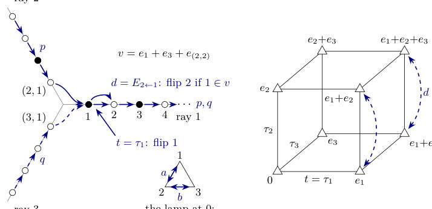
<figcaption class="paper-figure-caption"><b>Fig 1.</b> Figure 1: Left: the points of the three rays, a configuration v (filled points), the lamp at 0, and the generators as moves: p and q move points, and t and d move configurations. Right: the 23 configurations supported on the points 1, 2, 3, each carrying a lamp, joined by the translations τ1, τ2, τ3 and folded by the transvection d = E2←1, which exchanges e1 with e1 + e2 and e1 + e3 with e1 + e2 + e3 and fixes the other four. N points carry 2N lamps, and any two are brought together by moves that each involve at most three points.</figcaption>
</figure>
<figure class="paper-figure-card">
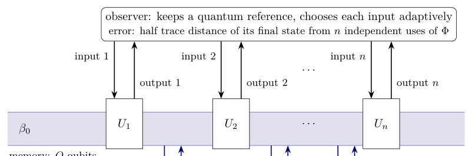
<figcaption class="paper-figure-caption"><b>Fig 2.</b> Figure 3: A causal service of Φ for n rounds. In each round the input enters, a fixed unitary Ut acts on it and the memory, and the output is released before the next input arrives; after each round but the last, a prescribed set of memory qubits is exported for good and replaced by the same number of fresh qubits in a fixed state. The resources are the memory Q, the exchange J, the purity P + C, and the error, the largest half trace distance between the observer’s final state and its final state after n independent uses of Φ.</figcaption>
</figure>
<figure class="paper-figure-card">
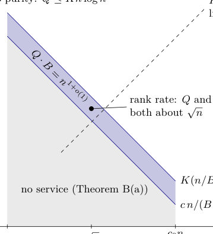
<figcaption class="paper-figure-caption"><b>Fig 3.</b> Figure 4: Memory against purity for the lamp channel, on logarithmic axes. For log n ≤B ≤ c0n the least memory of a service with purity at most B lies in the band Q · B = n1+o(1), between c n/(B(log n)2κ) and K(n/B) log(2n/B) (Theorem 11.1(a)), and at zero purity memory Kn log n suffices. At the rank rate the purity is less than 3Q + 6 (Proposition 13.1), so the band forces memory about √n, and streaming services attain this with purity of the same order (Theorem 11.1(b)).</figcaption>
</figure>
</div>
<p><strong>Summary.</strong> This paper connects group theory to quantum information by constructing an amenable group with an unexpectedly large sofic profile. It then uses this group structure to define a quantum channel, establishing sharp lower bounds on the quantum memory required to simulate the channel over many uses. This work reveals deep structural constraints linking algebraic complexity to quantum resource costs.</p>
<p><strong>Why it may be interesting.</strong> It provides a powerful, non-trivial link between abstract algebra (amenability, sofic properties) and fundamental resource constraints in quantum information (memory cost), suggesting deep structural limitations on quantum processes.</p>
<details>
<summary>Detailed structure</summary>
<p><strong>Main problem.</strong> The paper investigates the deep connection between the algebraic structure of amenable groups (quantified by the sofic profile) and the resource cost (memory) required for quantum channels.</p>
<p><strong>Main result.</strong> It constructs an amenable group with a nearly exponential sofic profile, and derives sharp trade-offs showing that quantum channels derived from this structure require memory scaling as $\sqrt{n}$ for $n$ uses.</p>
<p><strong>Method.</strong> The authors combine techniques from geometric group theory (constructing specific amenable groups) with resource theory in quantum information, analyzing memory/purity trade-offs for quantum channels.</p>
<p><strong>Model / system.</strong> The primary models are a finitely presented elementary amenable group $\Gamma$ and an explicit quantum channel $\Phi$ acting on $\mathbb{C}^{873}$. The group structure is built using 'configuration lamps' related to Houghton's group moves.</p>
<p><strong>Key observables.</strong> Sofic profile $\sigma_E(r)$, quantum memory size (qubits), and purity expenditure (bits).</p>
<p><strong>Important parameters / regimes.</strong> The scaling exponents, such as $\exp(r^{1+o(1)})$ for the profile and $\sqrt{n}$ for the memory cost.</p>
<p><strong>Assumptions / limitations.</strong> The analysis relies on the channel being factorizable and lying in the closure of channels with finite maximally mixed baths.</p>
<p><strong>Figures summary.</strong> Figure 1 illustrates the geometric setup involving points on three rays and the action of generators on configurations, which underpins the group construction.</p>
<p><strong>Paper structure.</strong> The paper progresses by first establishing the group-theoretic lower bound on the sofic profile, then constructing the specific group $\Gamma$, and finally translating these algebraic properties into sharp resource bounds for the associated quantum channel.</p>
</details>
<details>
<summary>Abstract</summary>
<p>How far from finite can an amenable group be? Every finite piece of an amenable group can be imitated by permutations of a finite set, and Cornulier's sofic profile counts how many points such an imitation needs at accuracy $1/r$. We build a finitely presented elementary amenable group with a finite piece whose profile is $\exp(r^{1+o(1)})$, close to the most our counting method can ever detect. The construction is a lamplighter with its lamps on configurations rather than on points. Houghton's group moves the points of three rays, finitely supported affine maps act on their binary configurations, and a copy of $S_3$ sits on every configuration. Then $N$ points carry $2^N$ lamps, yet any two lamps can be brought together by moves that each involve at most three points. The group embeds in Brin's group $3V$, so $3V$ too has a finite piece of nearly exponential profile. The group also gives an explicit quantum channel on $\mathbb C^{873}$ that is cheap to use once and expensive to use many times. A device that applies it $n$ times, releasing each output before the next input arrives, needs about $n/B$ qubits of memory when it may spend $B$ bits of purity, and exact devices achieve this up to polylogarithmic factors. With exchange at the optimal rate, the least memory is about $\sqrt n$, attained with purity of the same order. The channel is factorizable and lies in the closure of channels with finite maximally mixed baths, yet any such bath that imitates it to accuracy $u$ needs dimension $\exp(u^{-1+o(1)})$, although its minimal Stinespring dilation implements it exactly with a pure environment of dimension $130$. The engine is a one-round theorem: after a single use, the memory of any such device carries an approximate representation of the group.</p>
</details>
<p><sub><a href="#top">↑ back to top</a></sub></p>

<p><a id="paper-2610.05752"></a></p>
<h3 id="an-efficient-hamiltonian-based-quantum-algorithm-for-characters-of-the-symmetric-group"><a href="http://arxiv.org/abs/2610.05752v1">An efficient Hamiltonian-based quantum algorithm for characters of the symmetric group</a></h3>
<p><strong>Authors:</strong> Dikshant Rathore, Leo Zhou<br>
<strong>Type:</strong> theory · <strong>Category:</strong> quantum information and computing · <strong>PDF:</strong> <a href="https://arxiv.org/pdf/2610.05752v1">https://arxiv.org/pdf/2610.05752v1</a><br>
<strong>Analysis basis:</strong> full PDF text, analyzed in chunks</p>
<div class="figure-strip-hint">↔ Scroll figures horizontally</div>
<div class="paper-figures-scroll">
<figure class="paper-figure-card">
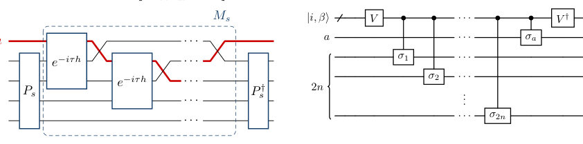
<figcaption class="paper-figure-caption"><b>Fig 1.</b> Figure 1: (a) Our CSP circuit: ℓ(ν) exactly timed Hamiltonian evolutions by Hνk in (1.8), each followed by an iX gate on the ancilla. (b) One Trotterized transfer on reconfigurable qubits: after the regrouping Ps, the 2n −s bond terms are nearest-neighbor, and the ancilla is swapped along the chain so that each bond gate acts on three adjacent qubits. (c) Block encoding of Hs: V puts the register |i, β⟩in uniform superposition over the Pauli-string labels, and site k receives the Pauli σk ∈{I, X, Y, Z} the register selects: X or Y at i and i + s, Z in between, I elsewhere.</figcaption>
</figure>
<figure class="paper-figure-card">
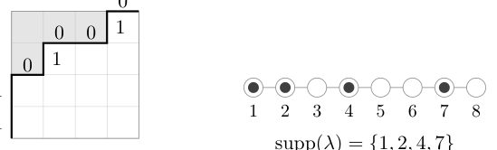
<figcaption class="paper-figure-caption"><b>Fig 2.</b> Figure 2: The encoding (2.10) for λ = (3, 1) at n = 4. The boundary of the Young diagram inside the 4×4 box is traced from the bottom left corner to the top right corner. Each step up is recorded as a 1 and each step to the right as a 0, giving a bit string of length 2n and Hamming weight n. The ones sit at the modes λj + n −j + 1, here {1, 2, 4, 7} after padding λ to (3, 1, 0, 0). The empty partition gives |seed⟩= |1n0n⟩.</figcaption>
</figure>
<figure class="paper-figure-card">
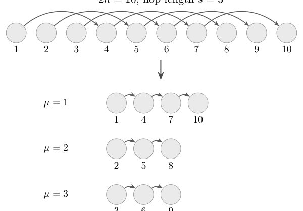
<figcaption class="paper-figure-caption"><b>Fig 3.</b> Figure 3: Chain decomposition (4.1) of the current operator Js, shown for 2n = 10 and s = 3. On the full chain Js hops each mode to the one s sites to its right. Grouping modes by residue class modulo s splits Js into s independent chains J(µ) s , here the residue classes {1, 4, 7, 10}, {2, 5, 8} and {3, 6, 9}, each a nearest-neighbor hopping chain of length Lµ ≈2n/s. The figure shows the decomposition at the level of mode couplings. In the physical ordering, each bond still carries a Jordan–Wigner string over the intervening modes, which the permutation Ps in (4.2) removes.</figcaption>
</figure>
<figure class="paper-figure-card">
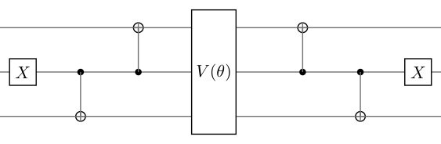
<figcaption class="paper-figure-caption"><b>Fig 4.</b> Figure 4: Circuit for a single bond rotation e−iθhq,a = T † q,a V (θ) Tq,a on the ancilla a and two site qubits q, q+1. The compression Tq,a of (4.7) maps the active subspace onto span{|000⟩, |010⟩}, where V (θ) performs the rotation (4.8), after which T † q,a uncomputes.</figcaption>
</figure>
<figure class="paper-figure-card">
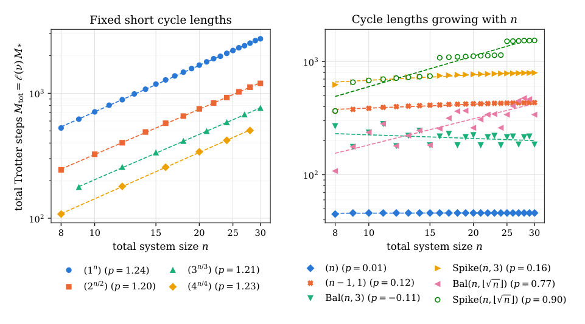
<figcaption class="paper-figure-caption"><b>Fig 5.</b> Figure 5: Total Trotter steps Mtot = ℓ(ν)M∗needed for the complete CSP circuit to reach final- state error 10−2, Eq. (4.28), for 8 ≤n ≤30. Markers are data, dashed lines are least-squares fits Mtot ∝np. Left: uniform cycle types (sn/s), s = 1, . . . , 4. The fits give p = 1.20–1.24, far below the operator-norm bound (4.14), which scales as n3 log n, and the leading-order state-dependent bound (4.23), which scales as n2 at fixed s. Right: cycle types whose lengths grow with n. Bal(n, c) has c cycles whose lengths differ by at most one, and Spike(n, c) = (n −c + 1, 1c−1) has one long cycle and c −1 fixed points. The fits give |p| ≤0.16 at fixed cycle count and p = 0.77 and 0.90 for...</figcaption>
</figure>
</div>
<p><strong>Summary.</strong> This paper presents an alternative, Hamiltonian-based quantum algorithm to prepare quantum states encoding characters of the symmetric group ($S_n$). It achieves better gate complexity bounds than prior QFT methods, providing an explicit algorithm for the Quantum Character Transform (QCT). This work advances the field by offering concrete, resource-aware quantum implementations for mathematically complex quantum states.</p>
<p><strong>Why it may be interesting.</strong> The focus on Hamiltonian simulation techniques (Trotter/QSVT) to achieve polynomial gate complexity for a fundamental mathematical structure like group characters is highly relevant to developing practical quantum algorithms for quantum information processing.</p>
<details>
<summary>Detailed structure</summary>
<p><strong>Main problem.</strong> Developing efficient quantum algorithms to prepare quantum states whose amplitudes encode the characters of the symmetric group ($S_n$).</p>
<p><strong>Main result.</strong> The authors propose a Hamiltonian-based approach achieving gate complexities up to $\widetilde O(n^{2.5})$ for the full Quantum Character Transform (QCT), improving upon prior QFT-based estimates of $\widetilde O(n^3)$.</p>
<p><strong>Method.</strong> The state preparation is achieved by simulating the evolution governed by a specific Hamiltonian ($H_s$) using Trotterization or Quantum Singular Value Transformation (QSVT).</p>
<p><strong>Model / system.</strong> The system is based on the symmetric group $S_n$, utilizing fermionic operators and current operators ($J_s$) acting on a product state to encode character table columns.</p>
<p><strong>Key observables.</strong> Character column state $|\chi^
u
angle$, Quantum Character Transform (QCT), and entanglement entropy ($\Delta S_\lambda$) in CFTs.</p>
<p><strong>Important parameters / regimes.</strong> The gate complexity scales depend on the cycle type $
u$, ranging from $O(n)$ to $\widetilde O(n^{2.5})$ in the worst case.</p>
<p><strong>Assumptions / limitations.</strong> Gate count estimates rely on leading-order state-dependent Trotter error analysis, and the worst-case bound uses a QSVT-based Hamiltonian simulation.</p>
<p><strong>Figures summary.</strong> The notes reference figures illustrating the Hamiltonian evolution (Fig. 1(b) for Trotterization and Fig. 1(c) for QSVT) used for state preparation.</p>
<p><strong>Paper structure.</strong> The paper progresses from defining the character state preparation problem, contrasting it with prior QFT methods, detailing the Hamiltonian simulation approach, deriving state-dependent error bounds, and finally presenting the full QCT algorithm.</p>
</details>
<details>
<summary>Abstract</summary>
<p>Consider a quantum state vector proportional to any given column of the character table of the symmetric group ($S_n$), corresponding to a superposition over the irreps weighted by the character values. It was recently argued that sampling from this state is classically hard under reasonable complexity-theoretic assumptions, while there exists an efficient quantum algorithm for preparing this character state using the quantum Fourier transform (QFT) over $S_n$ [arXiv:2501.12579]. We give an alternative, simpler algorithm to prepare this character state with a sequence of Hamiltonian evolutions, as well as an efficient implementation with reconfigurable qubits that uses only nearest-neighbor gates in 1D. The gate complexity, accounting for Hamiltonian simulation errors, depends on the choice of the column: For fixed target state error, the estimated sufficient total gate count ranges from as few as $O(n)$ gates for the $n$-cycle column, to $\widetilde O(n^{1.75})$ gates near the conjecturally classically hard parameter regime, to provably $\widetilde O(n^{2.5})$ gates in the worst case. In contrast, the QFT subroutine in the prior approach uses $\widetilde O(n^3)$ gates. Our gate count estimates come from leading-order state-dependent Trotter error analysis, and the proven worst-case bound relies on a QSVT-based Hamiltonian simulation method; numerical benchmarks of the Trotter-based protocol suggest that the estimates are conservative. Furthermore, we generalize our protocol to give an explicit algorithm for the quantum character transform (QCT) over $S_n$ using $\widetilde O(n^{2.5})$ gates and $O(n)$ qubits. An application to entanglement entropy of symmetric orbifold conformal field theories is also discussed.</p>
</details>
<p><sub><a href="#top">↑ back to top</a></sub></p>

<p><a id="paper-2610.06799"></a></p>
<h3 id="bell-nonlocality-does-not-imply-violation-of-nonlocal-games"><a href="http://arxiv.org/abs/2610.06799v1">Bell nonlocality does not imply violation of nonlocal games</a></h3>
<p><strong>Authors:</strong> Ricardo Faleiro, Lucas E. A. Porto, Marco Túlio Quintino, Flavien Hirsch<br>
<strong>Type:</strong> theory · <strong>Category:</strong> other · <strong>PDF:</strong> <a href="https://arxiv.org/pdf/2610.06799v1">https://arxiv.org/pdf/2610.06799v1</a><br>
<strong>Analysis basis:</strong> full PDF text, analyzed in chunks</p>
<div class="figure-strip-hint">↔ Scroll figures horizontally</div>
<div class="paper-figures-scroll">
<figure class="paper-figure-card">
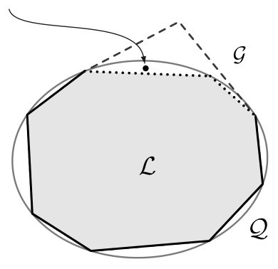
<figcaption class="paper-figure-caption"><b>Fig 1.</b> FIG. 1. The local polytope L lies inside both the quantum set Q and the game-classical polytope G. The dotted facets of L represent Bell inequalities which are not game-equivalent. The dashed facets of G represent the additional nonlocal games needed to enclose L. Our result proves Q ∩(G \ L) ̸= ∅, since pQ is a quantum realizable game-classical nonlocal behaviour. That is, pQ is quantum and Bell nonlocal, but remains in G. (This is merely schematic since G is not characterized in general and the relationship between G and Q is not known. It might be that G is entirely contained in Q, or not.)</figcaption>
</figure>
</div>
<p><strong>Summary.</strong> This paper proves that nonlocal games, while useful for testing nonlocality, are not complete witnesses for Bell nonlocality. The authors show that there exist quantum correlations that are genuinely nonlocal but do not violate any standard nonlocal game. This establishes a strict hierarchy among the sets of possible correlations: Local $\subsetneq$ Game-Classical $\subsetneq$ Quantum.</p>
<p><strong>Why it may be interesting.</strong> This work provides a deep theoretical understanding of the limitations of operational tests (like nonlocal games) in fully characterizing fundamental physical principles like Bell nonlocality, which is relevant for understanding quantum information bounds.</p>
<details>
<summary>Detailed structure</summary>
<p><strong>Main problem.</strong> The paper investigates whether Bell nonlocality, a concept derived from local hidden variable theories, is fully captured by the constraints imposed by nonlocal games.</p>
<p><strong>Main result.</strong> The authors prove that nonlocal games, as conventionally defined, are not complete witnesses of Bell nonlocality, demonstrating that quantum mechanics can exhibit nonlocal behaviors that violate no such game.</p>
<p><strong>Method.</strong> The analysis uses functional representations (Bell functionals) to compare the sets of achievable correlations: the local set ($\mathcal{L}$), the game-classical set ($\mathcal{G}$), and the quantum set ($\mathcal{Q}$).</p>
<p><strong>Model / system.</strong> The study is set in the context of bipartite Bell scenarios $(X, Y, A, B)$, analyzing correlations achievable by local hidden variables, quantum mechanics, and the set defined by all deterministic nonlocal games.</p>
<p><strong>Key observables.</strong> The key observables are the correlation functions $p(a, b|x, y)$ and the resulting values of Bell functionals $\langle M, p 
angle$.</p>
<p><strong>Important parameters / regimes.</strong> The analysis is shown to hold for bipartite scenarios with input sizes $X, Y \geq 2$ and output sizes $A, B \geq 4$.</p>
<p><strong>Assumptions / limitations.</strong> The analysis relies on the original definition of nonlocal games using deterministic predicates and the assumption that the set $\mathcal{G}$ is defined by the intersection of constraints derived from these games.</p>
<p><strong>Figures summary.</strong> Figures schematically illustrate the relationship between the local set ($\mathcal{L}$), the game-classical set ($\mathcal{G}$), and the quantum set ($\mathcal{Q}$), showing the existence of quantum correlations in $\mathcal{G} \setminus \mathcal{L}$.</p>
<p><strong>Paper structure.</strong> The paper first establishes that $\mathcal{G}$ is a polytope whose facets are nonlocal games. It then proves the strict inclusion $\mathcal{L} \subsetneq \mathcal{G}$ and, crucially, demonstrates that quantum mechanics can realize correlations in the region $\mathcal{G} \setminus \mathcal{L}$.</p>
</details>
<details>
<summary>Abstract</summary>
<p>Nonlocal games offer a conceptually clear way to reason about Bell nonlocality. However, we show that as originally defined, and most commonly used, i.e. with a deterministic predicate, they cannot be complete witnesses of nonlocality. Concretely, we prove the existence of nonlocal behaviours which do not violate any such nonlocal game. Furthermore, we also show that quantum mechanics can produce these game-classical nonlocal behaviours. We prove that this phenomenon exists in every bipartite scenario $(X,Y,A,B)$ with $X,Y\geq2$ and $A,B\geq4$.</p>
</details>
<p><sub><a href="#top">↑ back to top</a></sub></p>

<p><a id="paper-2610.03949"></a></p>
<h3 id="benchmarking-ansatze-for-pauli-correlation-encoding-in-the-maximum-independent-set-problem"><a href="http://arxiv.org/abs/2610.03949v1">Benchmarking Ansatze for Pauli Correlation Encoding in the Maximum Independent Set Problem</a></h3>
<p><strong>Authors:</strong> Cian C. Reeves, Aaron C. Kemp, Richard Padbury, Eva Lia Tarquini, Christoph Kloeffel, Vedangi Pathak, Hamed Mohammadbagherpoor, Vincent Beltrani<br>
<strong>Type:</strong> theory · <strong>Category:</strong> quantum information and computing · <strong>PDF:</strong> <a href="https://arxiv.org/pdf/2610.03949v1">https://arxiv.org/pdf/2610.03949v1</a><br>
<strong>Analysis basis:</strong> full PDF text, analyzed in chunks</p>
<div class="figure-strip-hint">↔ Scroll figures horizontally</div>
<div class="paper-figures-scroll">
<figure class="paper-figure-card">
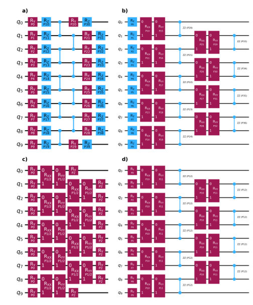
<figcaption class="paper-figure-caption"><b>Fig 1.</b> FIG. 1. Single repetition of each ansatz tested in this work. The last set of single qubit rotations in Fig. 1 a) and c) are not repeated for every repetition but just placed at the very end of the circuit independent of the number of repetitions.</figcaption>
</figure>
<figure class="paper-figure-card">
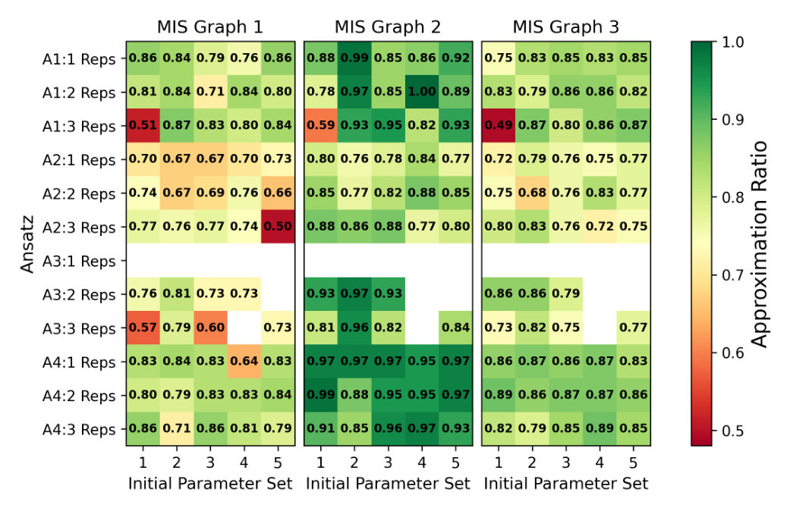
<figcaption class="paper-figure-caption"><b>Fig 2.</b> FIG. 2. Approximation ratio produced by PCE, after post-processing, for each ansatz in Fig. 1 for 10 qubits corresponding to a 134 node MIS graph[specific instances are shown in Fig. 6 a)-c)]. Ratios are with respect to the exact optimum computed with CPLEX. Blank spaces indicate the solution was not a valid independent set. The y-axis corresponds to the different ansatze and different number of repetitions, the x-axis corresponds to different initial parameters used to start the classical optimization.</figcaption>
</figure>
<figure class="paper-figure-card">
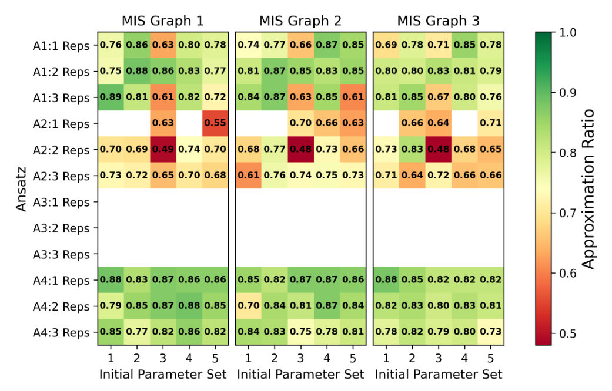
<figcaption class="paper-figure-caption"><b>Fig 3.</b> FIG. 3. Approximation ratio produced by PCE, after post-processing, for each ansatz in Fig. 1 for 15 qubits corresponding to a 314 node MIS graph[specific instances are shown in Fig. 6 S1 d)-f)]. Ratios are with respect to the exact optimum computed with CPLEX. Blank spaces indicate the solution was not a valid independent set. The y-axis corresponds to the different ansatze and different number of repetitions, the x-axis corresponds to different initial parameters used to start the classical optimization.</figcaption>
</figure>
<figure class="paper-figure-card">
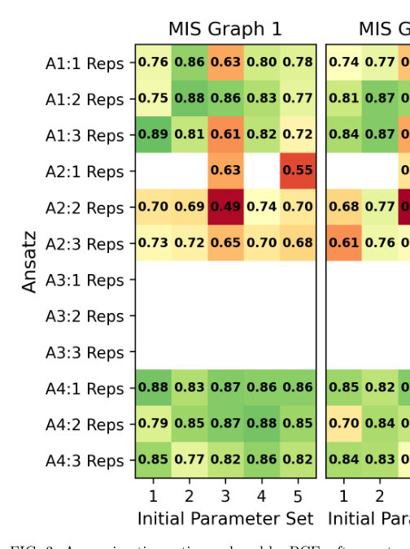
<figcaption class="paper-figure-caption"><b>Fig 4.</b> Fig. 4 shows results for three 569 node MIS problems encoded onto 20 qubits, all shown in Fig. 6 g)-i). Ex- cluding infeasible solutions, ansatz B again performs sig- nificantly worse compared to the other three ansatze and compared to the previous tests. The ratios it produces do not exceed 0.74 and typical values are closer to 0.67. Furthermore there is no improvement from increasing the number of repetitions. Possible reasons for this plateau- ing in quality of the Heisenberg ansatz will be discussed in section IV. Surprisingly, ansatz C performs better here than for the case with 15 qubits. While over 50% of the solutions it generates are again infeasible, those that are</figcaption>
</figure>
<figure class="paper-figure-card">
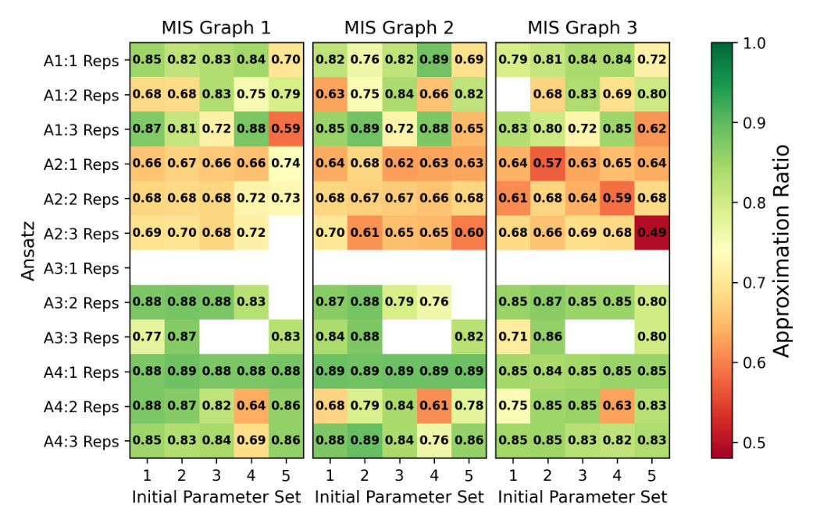
<figcaption class="paper-figure-caption"><b>Fig 5.</b> FIG. 4. Approximation ratio produced by PCE, after post-processing, for each ansatz in Fig. 1 for 20 qubits corresponding to a 569 node MIS graph[specific instances are shown in Fig. 6 g)-i)]. Ratios are with respect to the exact optimum computed with CPLEX. Blank spaces indicate the solution was not a valid independent set. The y-axis corresponds to the different ansatze and different number of repetitions, the x-axis corresponds to different initial parameters used to start the classical optimization.</figcaption>
</figure>
</div>
<p><strong>Summary.</strong> This work benchmarks Pauli Correlation Encoding (PCE) for solving the Maximum Independent Set problem on quantum hardware simulators. The authors compare several quantum circuit ansatze and find that ansatz selection is crucial for achieving good approximation ratios. Key findings highlight that representability constraints limit performance, and increasing the number of available qubits significantly boosts raw solution quality.</p>
<p><strong>Why it may be interesting.</strong> It provides deep insight into the practical limitations of variational quantum algorithms, specifically how encoding constraints (representability) interact with hardware resource limitations (qubit count/compression) in optimization tasks.</p>
<details>
<summary>Detailed structure</summary>
<p><strong>Main problem.</strong> The paper addresses the challenge of solving computationally hard combinatorial optimization problems, such as Maximum Independent Set (MIS), using near-term quantum hardware.</p>
<p><strong>Main result.</strong> The choice of quantum ansatz is critical for solution quality, with specific ansatz families significantly outperforming others; furthermore, increasing qubit availability (reducing compression) improves raw solution quality.</p>
<p><strong>Method.</strong> The study benchmarks various Pauli Correlation Encoding (PCE) ansatz designs by mapping the MIS problem to a QUBO formulation and optimizing parameters using classical optimizers.</p>
<p><strong>Model / system.</strong> The model uses quantum circuits parameterized by ansatze (A, B, C, D) to estimate Pauli string expectation values, which are then used to approximate the solution to the MIS problem.</p>
<p><strong>Key observables.</strong> Approximation ratio of the found MIS size relative to the exact optimum, and the feasibility of the resulting binary solution.</p>
<p><strong>Important parameters / regimes.</strong> Compression ratio (related to the number of available Pauli strings/qubits), circuit repetitions, and the specific ansatz structure.</p>
<p><strong>Assumptions / limitations.</strong> The primary assumption is that PCE can provide a qubit-efficient alternative to full one-hot encoding, though the authors note that interdependence of correlators remains a limitation.</p>
<p><strong>Figures summary.</strong> Figures illustrate the approximation ratios for MIS instances of varying sizes (134, 314, 569 nodes) using different ansatzes and varying levels of Pauli string compression.</p>
<p><strong>Paper structure.</strong> The paper introduces the need for quantum optimization for NP-hard problems, details the PCE framework using MIS as a benchmark, compares multiple ansatz designs and compression ratios, and concludes by analyzing the role of representability constraints.</p>
</details>
<details>
<summary>Abstract</summary>
<p>The increasing complexity of 5G and emerging 6G wireless networks has intensified the need for scalable optimization techniques capable of addressing computationally challenging combinatorial problems. While quantum optimization offers a promising alternative, current near-term quantum hardware remains limited by qubit availability, noise, and scalability constraints. Pauli Correlation Encoding (PCE) has emerged as a qubit-efficient optimization framework that addresses these challenges through polynomial variable compression. However, the impact of compression on representability and solution recovery remains poorly understood. In this work, we investigate the hypothesis that increasing compression ratios introduce representability constraints arising from algebraic closure relationships among encoded Pauli observables. Using Maximum Independent Set benchmark problems, we evaluate multiple PCE ansatz designs and compression ratios. We find that ansatz selection is critical to both solution quality and feasibility, with two ansatz families consistently outperforming alternatives and achieving approximation ratios approaching 0.9. Furthermore, increasing circuit repetitions provides limited benefit and can degrade performance. Most notably, reducing compression by increasing the number of available qubits significantly improves raw solution quality, while post-processed performance remains comparatively stable. These findings suggest that representability effects play an important role in compressed PCE encodings and provide new insight into the relationship among compression, ansatz design, decoding, and solution quality in scalable quantum optimization.</p>
</details>
<p><sub><a href="#top">↑ back to top</a></sub></p>

<p><a id="paper-2610.04648"></a></p>
<h3 id="bounding-two-way-average-communication-cost-of-simulating-quantum-correlations"><a href="http://arxiv.org/abs/2610.04648v1">Bounding Two-Way Average Communication Cost of Simulating Quantum Correlations</a></h3>
<p><strong>Authors:</strong> Kai-Siang Chen, Gelo Noel M. Tabia, Bo-An Tsai, Swati Kumari, Yeong-Cherng Liang<br>
<strong>Type:</strong> theory · <strong>Category:</strong> quantum information and computing · <strong>PDF:</strong> <a href="https://arxiv.org/pdf/2610.04648v1">https://arxiv.org/pdf/2610.04648v1</a><br>
<strong>Analysis basis:</strong> full PDF text, analyzed in chunks</p>
<div class="figure-strip-hint">↔ Scroll figures horizontally</div>
<div class="paper-figures-scroll">
<figure class="paper-figure-card">
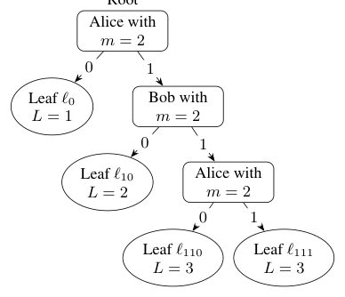
<figcaption class="paper-figure-caption"><b>Fig 1.</b> FIG. 1. An example of a rooted public tree. Upon learning her local input x, Alice begins by sending one bit. Sending 0 ends communi- cation at ℓ0, whereas sending 1 passes the turn to Bob. Based on his local input y, Bob replies accordingly, which either ends communi- cation at ℓ10 when he sends 0, or returns the turn to Alice when he sends 1. In the latter case, Alice’s final bit selects between ℓ110 and ℓ111. The leaf subscripts record the complete message sequences. Since every internal node has m(v) = 2, the four paths leading to ℓ0, ℓ10, ℓ110, and ℓ111 have communication costs of 1, 2, 3, and 3 bits, respectively.</figcaption>
</figure>
<figure class="paper-figure-card">
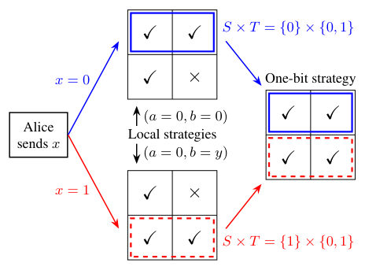
<figcaption class="paper-figure-caption"><b>Fig 2.</b> FIG. 2. A one-bit communication strategy that wins the CHSH game with certainty. Alice and Bob receive inputs x, y ∈{0, 1} and pro- duce outputs a, b ∈{0, 1}, respectively. They win when a⊕b = xy. Alice sends her input x to Bob and always outputs a = 0. Bob out- puts b = 0 if x = 0 and b = y if x = 1. The two middle grids show the corresponding local strategies on the full input space. Rows cor- respond to Alice’s inputs x = 0, 1 from top to bottom, and columns to Bob’s inputs y = 0, 1 from left to right. Check marks and crosses indicate winning and losing input pairs, respectively. The solid blue and dashed red rectangles mark the restricted set of input pairs S×T induced by the...</figcaption>
</figure>
</div>
<p><strong>Summary.</strong> This paper develops sophisticated lower bounds on the average classical communication cost needed to simulate quantum correlations in nonlocal games. By adapting communication complexity tools and constructing an LP hierarchy, the authors provide precise quantitative measures of quantum nonlocality. This work is crucial for understanding the resource theory of quantum information.</p>
<p><strong>Why it may be interesting.</strong> This work provides rigorous, quantifiable measures (communication cost) for the nonclassical resources inherent in quantum correlations, which is fundamental to understanding the limits of classical simulation.</p>
<details>
<summary>Detailed structure</summary>
<p><strong>Main problem.</strong> The paper aims to determine the minimum classical communication cost required to simulate quantum correlations, particularly in the challenging setting of input-average communication cost.</p>
<p><strong>Main result.</strong> They derive explicit lower bounds for the average communication cost for simulating nonlocal quantum correlations, achieving specific bounds for parallel Magic-Square-winning correlations and the CHSH game.</p>
<p><strong>Method.</strong> The authors adapt communication-complexity techniques, utilizing rooted public trees and developing a Linear Programming (LP) hierarchy of lower bounds based on deterministic correlations.</p>
<p><strong>Model / system.</strong> The analysis focuses on bipartite Bell scenarios involving Alice and Bob, comparing quantum correlations (from quantum measurements) against classical correlations achievable via communication protocols.</p>
<p><strong>Key observables.</strong> Input-average communication cost ($ar{C}_\sigma^\mu$), winning probability in nonlocal games, and the structure of communication protocols represented by public trees.</p>
<p><strong>Important parameters / regimes.</strong> The number of parallel copies ($n$), the input distribution ($\mu$), and the specific quantum correlation being simulated (e.g., CHSH).</p>
<p><strong>Assumptions / limitations.</strong> The analysis relies on the existence of an optimal finite protocol and assumes the input distribution has full support for key lemmas.</p>
<p><strong>Figures summary.</strong> Figure 1 illustrates a rooted public tree structure used to model communication protocols and calculate the associated communication cost. Figure 2 shows a one-bit communication strategy winning the CHSH game.</p>
<p><strong>Paper structure.</strong> The paper builds by first establishing lower bounds from nonlocal games, then developing the framework using the winning-rectangle and winning-probability bounds for parallel repetitions, and finally introducing an LP hierarchy to approach the exact input-average cost.</p>
</details>
<details>
<summary>Abstract</summary>
<p>Bell nonlocal correlations cannot be reproduced by local hidden-variable models without communication, making classical communication cost a natural quantitative measure of nonlocality. Although finite communication always suffices to simulate any correlation in a fixed finite Bell scenario, determining the minimum amount needed to (exactly) simulate any given nonlocal correlation remains challenging, especially in the average-cost setting. Here, we derive lower bounds on input-average communication cost from nonlocal games, allowing variable-length, fully interactive two-way protocols. When applied to parallel games, these bounds yield explicit finite quantum correlations for which the exact simulation cost exceeds any prescribed finite input-average communication budget. For $n$ parallel Magic-Square-winning correlations, we prove a lower bound of $n\log_2(3/2)$ bits and give a one-way communication protocol that attains this rate asymptotically. For the quantum correlation maximally winning the $n$-copy of the Clauser--Horne--Shimony--Holt nonlocal game, we obtain an input-average lower bound of approximately $0.04627n$ bits for exact simulation. Finally, we formulate a hierarchy of lower bounds and complementary upper bounds using deterministic correlations up to chosen communication costs. Both recover the exact input-average cost at their final levels, and if the bounds agree at lower levels, their common value yields the exact input-average cost without needing to consider all communication strategies.</p>
</details>
<p><sub><a href="#top">↑ back to top</a></sub></p>

<p><a id="paper-2610.06789"></a></p>
<h3 id="characterizing-quantum-advantage-for-generalizations-of-the-boolean-hidden-matching-problem"><a href="http://arxiv.org/abs/2610.06789v1">Characterizing Quantum Advantage for Generalizations of the Boolean Hidden Matching Problem</a></h3>
<p><strong>Authors:</strong> Mark Bun, Joao F. Doriguello, John Kallaugher, Nadezhda Voronova<br>
<strong>Type:</strong> theory · <strong>Category:</strong> quantum information and computing · <strong>PDF:</strong> <a href="https://arxiv.org/pdf/2610.06789v1">https://arxiv.org/pdf/2610.06789v1</a><br>
<strong>Analysis basis:</strong> full PDF text, analyzed in chunks</p>
<div class="figure-strip-hint">↔ Scroll figures horizontally</div>
<div class="paper-figures-scroll">
<figure class="paper-figure-card">
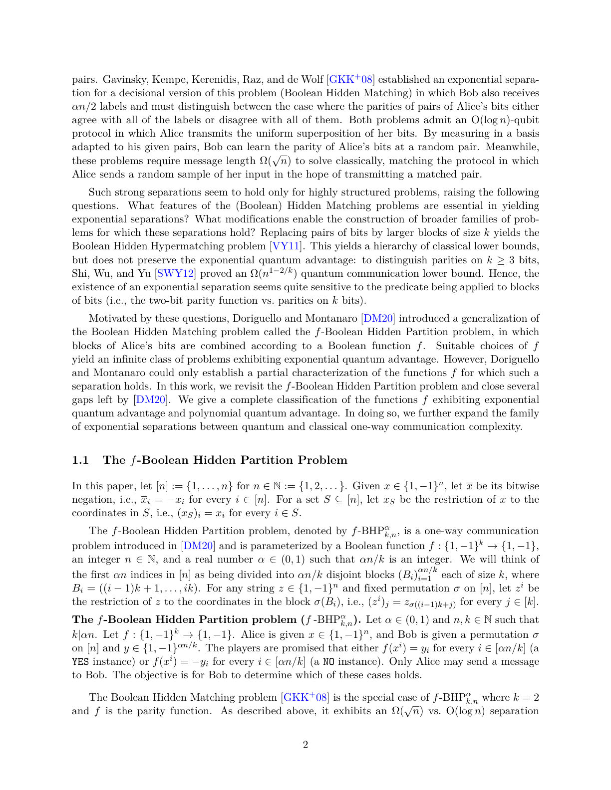
<figcaption class="paper-figure-caption"><b>Fig 1.</b> Low-resolution page preview, page 2</figcaption>
</figure>
<figure class="paper-figure-card">
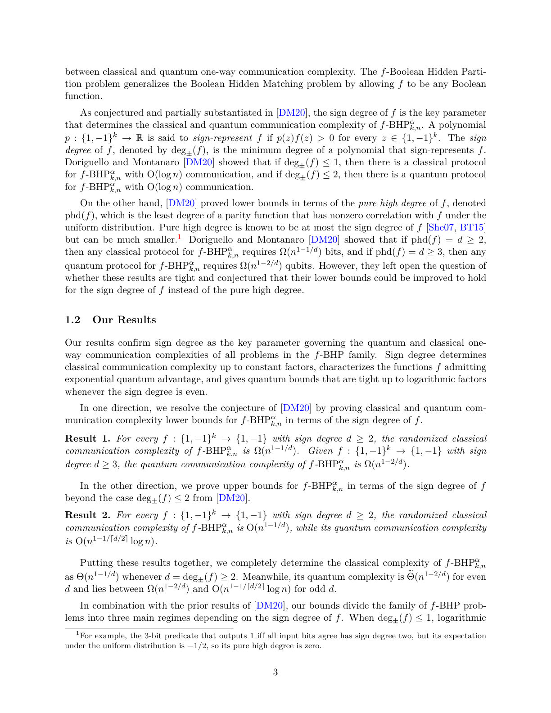
<figcaption class="paper-figure-caption"><b>Fig 2.</b> Low-resolution page preview, page 3</figcaption>
</figure>
<figure class="paper-figure-card">
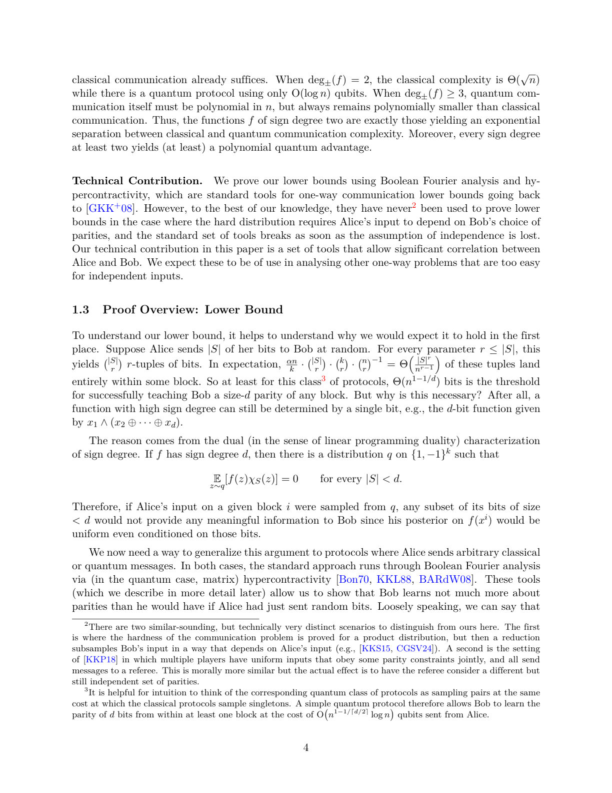
<figcaption class="paper-figure-caption"><b>Fig 3.</b> Low-resolution page preview, page 4</figcaption>
</figure>
<figure class="paper-figure-card">
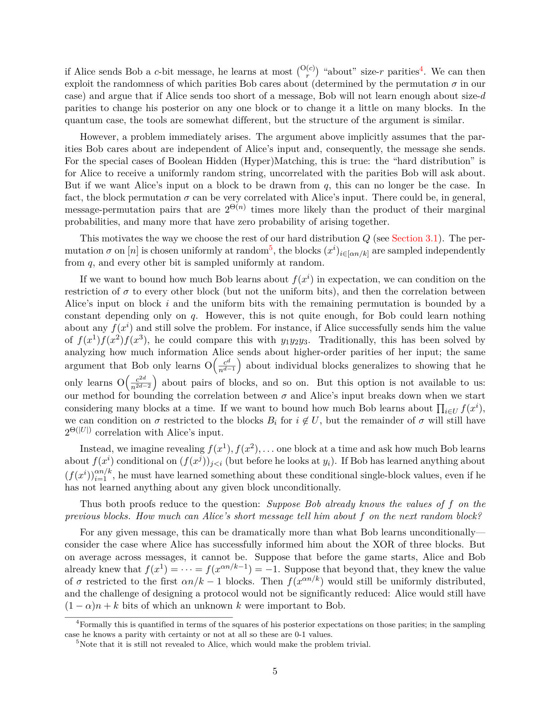
<figcaption class="paper-figure-caption"><b>Fig 4.</b> Low-resolution page preview, page 5</figcaption>
</figure>
<figure class="paper-figure-card">
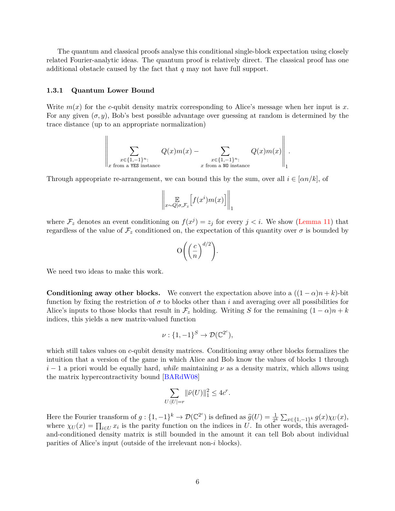
<figcaption class="paper-figure-caption"><b>Fig 5.</b> Low-resolution page preview, page 6</figcaption>
</figure>
</div>
<p><strong>Summary.</strong> This work analyzes the communication complexity of a generalized hidden matching problem, linking the computational difficulty directly to the sign degree of the underlying Boolean function $f$. It establishes precise classical and quantum communication bounds, proving that a polynomial quantum advantage exists if and only if the sign degree $d$ is two or greater. This provides a deep theoretical understanding of quantum computational separation in communication tasks.</p>
<p><strong>Why it may be interesting.</strong> The rigorous characterization of quantum advantage based on a purely algebraic property (sign degree) of a Boolean function is highly relevant for understanding the limits of quantum communication protocols.</p>
<details>
<summary>Detailed structure</summary>
<p><strong>Main problem.</strong> The paper characterizes the quantum advantage for solving generalizations of the Boolean Hidden Matching Problem, specifically the $f$-Boolean Hidden Partition problem.</p>
<p><strong>Main result.</strong> The sign degree $d$ of the function $f$ completely characterizes the communication complexity, showing that quantum advantage exists if and only if $d \ge 2$.</p>
<p><strong>Method.</strong> The authors use Boolean Fourier analysis and hypercontractivity to establish rigorous classical and quantum communication lower bounds based on the sign degree $d$.</p>
<p><strong>Model / system.</strong> The model is the one-way communication complexity setting where Alice holds an $n$-bit string and Bob holds disjoint blocks of indices, requiring Bob to determine if function evaluations agree or disagree with given labels.</p>
<p><strong>Key observables.</strong> Classical and quantum one-way communication complexity (in bits/qubits), and the sign degree $d$ of the function $f$.</p>
<p><strong>Important parameters / regimes.</strong> The sign degree $d = 	ext{deg}_{\pm}(f)$, and the input size $n$.</p>
<p><strong>Assumptions / limitations.</strong> The analysis relies on the promise that the function evaluations either all agree or all disagree with the labels, and it addresses scenarios where the independence assumption breaks down.</p>
<p><strong>Paper structure.</strong> The paper establishes bounds by first analyzing the problem structure, then developing new tools using Fourier analysis to prove lower bounds dependent on $d$, and finally deriving upper bounds that match these lower bounds to achieve characterization.</p>
</details>
<details>
<summary>Abstract</summary>
<p>We study the one-way communication complexity of the $f$-Boolean Hidden Partition problem. Here, Alice is given an $n$-bit string and Bob is given $Ω(n)$ disjoint blocks of its indices together with a string of labels. Under the promise that the evaluations of $f$ on these blocks either agree with all of the labels or disagree with all of them, Bob must determine which is the case using a single message from Alice. This problem generalizes the Boolean Hidden Matching and Hidden Hypermatching problems, which capture the special case where $f$ is the parity function.   We establish classical and quantum communication bounds for $f$-Boolean Hidden Partition in terms of the sign degree $d$ of $f$, proving a conjecture of Doriguello and Montanaro (TQC 2020). Their prior work gave logarithmic communication upper bounds for classical protocols when $d \le 1$ and quantum protocols when $d \le 2$, as well as polynomial lower bounds for certain structured functions with larger sign degree. We show that for every $f$ of sign degree $d \ge 2$, the randomized classical communication complexity of this problem is $Θ(n^{1-1/d})$ while its quantum communication complexity lies between $Ω(n^{1-2/d})$ and $\bO{n^{1-1/\lceil d/2 \rceil} \log n}$. This completely characterizes the functions $f$ admitting polynomial quantum advantage as those for which $d \ge 2$, with a new infinite family of exponential separations given by the case $d = 2$.</p>
</details>
<p><sub><a href="#top">↑ back to top</a></sub></p>

<p><a id="paper-2610.06533"></a></p>
<h3 id="closed-form-arbitrary-gap-renyi-nonadditivity-above-any-positive-order-via-direct-products-of-free-groups-and-high-girth-graphs"><a href="http://arxiv.org/abs/2610.06533v1">Closed-Form Arbitrary-Gap Rényi Nonadditivity Above Any Positive Order via Direct Products of Free Groups and High-Girth Graphs</a></h3>
<p><strong>Authors:</strong> Guocheng Zhen, Ranyiliu Chen, Xin Wang<br>
<strong>Type:</strong> theory · <strong>Category:</strong> quantum information and computing · <strong>PDF:</strong> <a href="https://arxiv.org/pdf/2610.06533v1">https://arxiv.org/pdf/2610.06533v1</a><br>
<strong>Analysis basis:</strong> full PDF text, analyzed in chunks</p>
<div class="figure-strip-hint">↔ Scroll figures horizontally</div>
<div class="paper-figures-scroll">
<figure class="paper-figure-card">
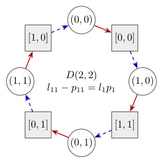
<figcaption class="paper-figure-caption"><b>Fig 1.</b> Figure 1: The coordinate graph D(2, 2). Circles and squares represent points and lines, while the two edge styles represent the two colours.</figcaption>
</figure>
</div>
<p><strong>Summary.</strong> This theoretical paper constructs quantum channels that violate the additivity of minimum-output Rényi entropy by an arbitrarily large, controllable amount. It achieves this using a sophisticated model involving direct products of free groups and high-girth graphs. The work provides explicit, closed-form bounds and compares its resource scaling favorably against previous state-of-the-art constructions.</p>
<p><strong>Why it may be interesting.</strong> The techniques developed—combining algebraic graph theory (free groups, high-girth graphs) with quantum information measures (Rényi entropy)—provide powerful, non-standard tools for proving fundamental limitations in quantum information theory.</p>
<details>
<summary>Detailed structure</summary>
<p><strong>Main problem.</strong> The paper aims to construct quantum channels that exhibit arbitrarily large violations of minimum-output Rényi entropy additivity for all Rényi orders $p$ above a positive cutoff $p_0$.</p>
<p><strong>Main result.</strong> A closed-form, finite-dimensional construction is provided that guarantees the additivity gap $\Delta_p$ exceeds any prescribed positive value $g$ simultaneously for all $p \in [p_0, \infty)$.</p>
<p><strong>Method.</strong> The construction utilizes a novel model based on direct products of free groups and fixed-field high-girth graphs, employing spherical penalties derived from Chebyshev polynomials to establish strong compression bounds.</p>
<p><strong>Model / system.</strong> The study concerns quantum channels $\Phi: \mathcal{M}_n(\mathbb{C}) 	o \mathcal{D}(\mathbb{C})$ acting on finite-dimensional quantum systems. The construction is explicitly realized using permutation matrices derived from graph structures.</p>
<p><strong>Key observables.</strong> Minimum-output Rényi entropy additivity gap ($\Delta_p$), Rényi entropy $H_p(
ho)$, and the required input/output qubit dimensions.</p>
<p><strong>Important parameters / regimes.</strong> The target gap $g>0$, the Rényi order cutoff $p_0>0$, and the resulting parameters $r = \lceil 2g 
ceil$.</p>
<p><strong>Assumptions / limitations.</strong> The analysis relies on the existence of high-girth graphs and the ability to evaluate spherical averages using finite moment formulas, providing explicit certified bounds.</p>
<p><strong>Figures summary.</strong> The notes mention Figure 1 illustrating the coordinate graph $D(2, 2)$ structure, which is central to defining the algebraic representations used in the construction.</p>
<p><strong>Paper structure.</strong> The paper builds from establishing the general problem of nonadditivity, develops the algebraic machinery using free groups and high-girth graphs, introduces spherical penalties to create a filter, and culminates in proving the explicit, closed-form construction and comparing its resource scaling to prior art.</p>
</details>
<details>
<summary>Abstract</summary>
<p>We give a closed-form finite-dimensional construction of quantum channels with real algebraic entries exhibiting arbitrarily large violations of minimum-output Rényi entropy additivity uniformly above any prescribed positive Rényi order, using a different finite realization based on direct products of free groups and fixed-field high-girth graphs. More precisely, for every $p_0>0$ and $g>0$, we construct one channel and one Bell input for which the additivity gap is greater than $g$ simultaneously for all $p\in[p_0,\infty]$. With $r=\lceil2g\rceil$, the construction uses $15r$ output qubits and $O(r2^{30r}+r^2(1+p_0^{-1}))$ input qubits. Compared with the stated parameters of Shou and Gorshkov \cite{ShouGorshkov2026}, our construction uses fewer output qubits for every target gap and has a smaller asymptotic input-qubit bound as the gap grows with the positive cutoff fixed. At the von Neumann order, a separate specialization gives an explicit channel with gap greater than $1/1024$ using $37608898$ input qubits and $8$ output qubits.</p>
</details>
<p><sub><a href="#top">↑ back to top</a></sub></p>

<p><a id="paper-2610.06113"></a></p>
<h3 id="collective-quantum-state-preparation-is-nonadditive"><a href="http://arxiv.org/abs/2610.06113v1">Collective Quantum State Preparation Is Nonadditive</a></h3>
<p><strong>Authors:</strong> Lin Zhu, Ranyiliu Chen, Xin Wang, Shenggen Zheng<br>
<strong>Type:</strong> theory · <strong>Category:</strong> quantum information and computing · <strong>PDF:</strong> <a href="https://arxiv.org/pdf/2610.06113v1">https://arxiv.org/pdf/2610.06113v1</a><br>
<strong>Analysis basis:</strong> full PDF text, analyzed in chunks</p>
<div class="figure-strip-hint">↔ Scroll figures horizontally</div>
<div class="paper-figures-scroll">
<figure class="paper-figure-card">
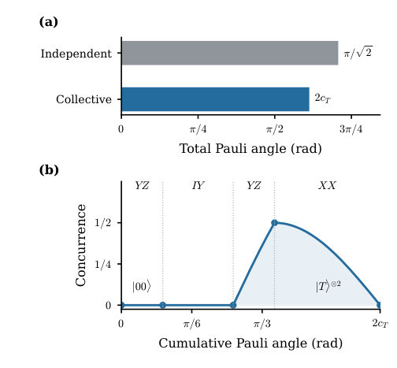
<figcaption class="paper-figure-caption"><b>Fig 1.</b> FIG. 2. Collective preparation of a product target at reduced cost. (a) Its total angle 2cT is below the optimal independent cost 2C1(T) = π/ √</figcaption>
</figure>
<figure class="paper-figure-card">
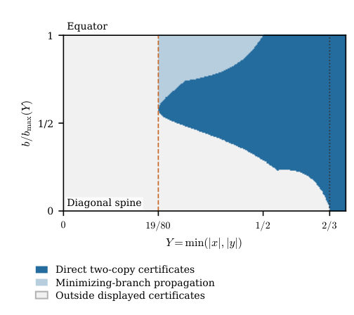
<figcaption class="paper-figure-caption"><b>Fig 2.</b> FIG. 3. Certified collective-saving regions on the northern Bloch sphere. The folded hemisphere is parame- terized by y = Y and the final Y -rotation angle b, normalized by its equatorial value bmax(y). Dark shading denotes di- rect tangent certificates and light shading their propagation along independently minimizing suffixes. Proposition 4 gives the region Y &gt; 2/3, while Proposition 5 gives the certified equatorial arc beginning at Y = 19/80. Gray points are not classified by the present certificates.</figcaption>
</figure>
</div>
<p><strong>Summary.</strong> This theoretical work analyzes the resource cost of preparing multiple copies of a quantum state using collective quantum control. It proves that this cost is strictly nonadditive, meaning that coordinating the preparation of several copies can achieve the target state at a lower total cost than preparing each copy individually. This establishes a new 'many-copy geometry' for state synthesis in quantum information theory.</p>
<p><strong>Why it may be interesting.</strong> The finding that collective control can yield non-additive advantages in state synthesis provides a new geometric understanding of resource costs beyond simple independent operations, which is crucial for designing efficient quantum protocols.</p>
<details>
<summary>Detailed structure</summary>
<p><strong>Main problem.</strong> The paper investigates whether the resource cost for preparing multiple copies of a quantum state (the many-copy problem) is additive when using collective quantum control.</p>
<p><strong>Main result.</strong> Collective state preparation is shown to be strictly nonadditive, meaning the asymptotic cost per copy can be lower than the cost of preparing a single copy.</p>
<p><strong>Method.</strong> The authors derive exact single-qubit preparation cost formulas and use entropy bounds (Rényi entropy) to establish lower bounds on the preparation rate.</p>
<p><strong>Model / system.</strong> The model uses quantum state preparation governed by Pauli-product rotations $e^{i\phi P}$, where the cost is the total rotation angle $\sum |\phi_j|$. The analysis focuses on comparing single-copy costs ($C_1$) versus collective/asymptotic costs ($C_\infty$).</p>
<p><strong>Key observables.</strong> Minimum preparation cost ($C_n(\psi)$), asymptotic cost per copy ($C_\infty(\psi)$), and fidelity bounds ($F_n$).</p>
<p><strong>Important parameters / regimes.</strong> The Bloch vector coordinates $(x, y, z)$, the number of copies $n$, and the Pauli weight $P$.</p>
<p><strong>Assumptions / limitations.</strong> The cost metric assumes the rotation angle $|\phi|$ is charged independently of the Pauli weight $P$.</p>
<p><strong>Figures summary.</strong> Figures illustrate the cost comparison for preparing two T states using both independent and collective protocols, and show the evolution of concurrence along the circuit.</p>
<p><strong>Paper structure.</strong> The paper first establishes the nonadditivity of the cost for simple cases (like the T state), then derives general cost formulas, and finally uses entropy bounds to constrain the achievable collective savings.</p>
</details>
<details>
<summary>Abstract</summary>
<p>Quantum state preparation is a basic primitive of quantum computation and control, but its resource cost is usually analyzed for one target state or under an independent-copy construction. Here we study the many-copy problem under weighted Pauli control, where a Pauli-product rotation $e^{iφP}$ is charged by its rotation angle $|φ|$, independently of the weight of $P$. We derive the exact single-qubit preparation cost and show that it is strictly nonadditive: a four-pulse collective protocol prepares two $T$ states at lower cost than two optimal one-copy protocols. We further identify finite regions of the Bloch sphere with collective saving, including trajectories that remain product throughout, showing that transient entanglement is not the only mechanism behind the advantage. Complementarily, a dimension-independent Rényi-entropy speed limit gives an extensive lower bound for every coherent target and an exponential fidelity penalty below a finite preparation rate. These results establish a many-copy geometry of state synthesis in which uncorrelated outputs can nevertheless benefit from collective control.</p>
</details>
<p><sub><a href="#top">↑ back to top</a></sub></p>

<p><a id="paper-2610.06059"></a></p>
<h3 id="comparing-thresholds-of-xzzx-and-rotated-surface-codes-under-spatio-temporal-correlated-noise"><a href="http://arxiv.org/abs/2610.06059v1">Comparing thresholds of XZZX and rotated surface codes under spatio-temporal correlated noise</a></h3>
<p><strong>Authors:</strong> Dhruv Koul<br>
<strong>Type:</strong> theory · <strong>Category:</strong> quantum information and computing · <strong>PDF:</strong> <a href="https://arxiv.org/pdf/2610.06059v1">https://arxiv.org/pdf/2610.06059v1</a><br>
<strong>Analysis basis:</strong> full PDF text, analyzed in chunks</p>
<div class="figure-strip-hint">↔ Scroll figures horizontally</div>
<div class="paper-figures-scroll">
<figure class="paper-figure-card">
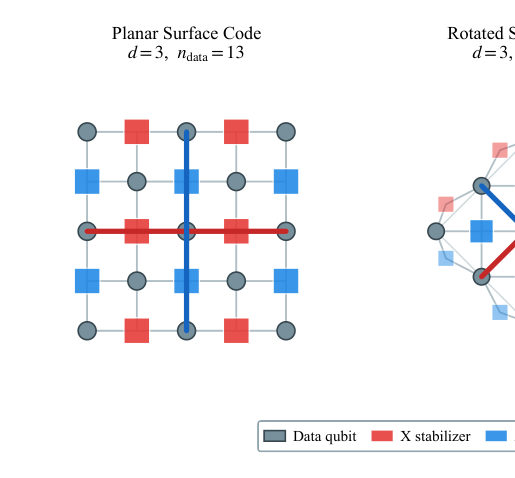
<figcaption class="paper-figure-caption"><b>Fig 1.</b> Fig. 1. Graphical representation of Planar, Rotated and XZZX surface code</figcaption>
</figure>
<figure class="paper-figure-card">
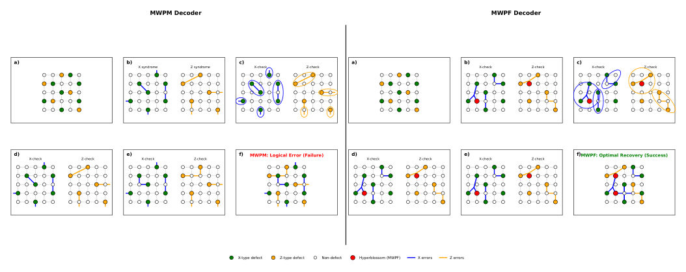
<figcaption class="paper-figure-caption"><b>Fig 2.</b> Fig. 2. Step-by-step comparison of the MWPM and MWPF decoding procedures applied to an identical syndrome. (a) The initial syndrome, with green and orange nodes representing triggered X-type and Z-type detection events, respectively. (b) The decoding graph constructed from the syndrome: MWPM builds a standard graph of pairwise edges, while MWPF constructs a hypergraph that natively represents multi-detector correlations. Red nodes, called hyperblossoms, mark the meeting points where three or more error chains converge, in standard graph decoders these multi-way junctions cannot be represented and must be artificially split into pairs, hence losing the correlation information. MWPF instead...</figcaption>
</figure>
<figure class="paper-figure-card">
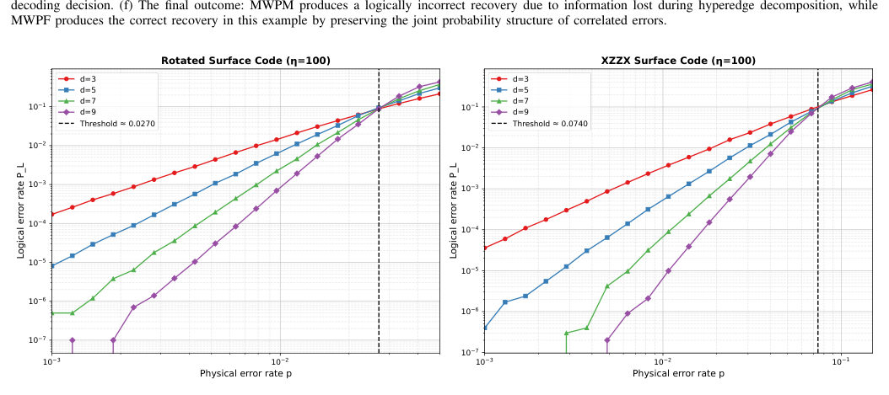
<figcaption class="paper-figure-caption"><b>Fig 3.</b> Fig. 3. Logical error rate vs. physical error rate under strongly Z-biased phenomenological noise (η = 100) for (left) Rotated Surface Code and (right) XZZX Surface Code, decoded using MWPF. Under this pure bias baseline, the XZZX code achieves a threshold of ≈7.40%, nearly 2.7× higher than the rotated code’s threshold of ≈2.70%, showcasing its high resilience to pure dephasing errors.</figcaption>
</figure>
<figure class="paper-figure-card">
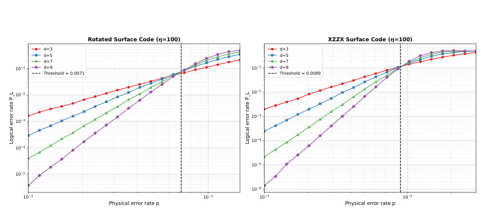
<figcaption class="paper-figure-caption"><b>Fig 4.</b> Fig. 4. Logical error rate vs. physical error rate under strongly Z-biased circuit-level noise (η = 100) for (left) Rotated Surface Code and (right) XZZX Surface Code, decoded using MWPF. Introducing circuit-level error propagation yields a threshold of ≈0.89% for the XZZX code and ≈0.71% for the rotated code, demonstrating that the XZZX code maintains a topological advantage under pure bias.</figcaption>
</figure>
<figure class="paper-figure-card">
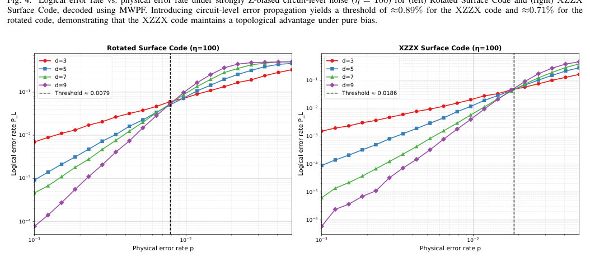
<figcaption class="paper-figure-caption"><b>Fig 5.</b> Fig. 5. Logical error rate vs. physical error rate under Z-biased phenomenological spatio-temporal correlated noise (η = 100) for (left) Rotated Surface Code and (right) XZZX Surface Code, decoded using MWPF. The introduction of correlated errors degrades the XZZX threshold to ≈1.86%, while the rotated code drops to ≈0.79%, illustrating the vulnerability of decoupled 1D chains to correlated noise.</figcaption>
</figure>
</div>
<p><strong>Summary.</strong> This paper rigorously tests the performance of XZZX and rotated surface codes under realistic, correlated spatio-temporal noise, moving beyond simple i.i.d. error assumptions. By using a specialized hypergraph decoder, the authors demonstrate that the code's threshold is highly sensitive to the noise's geometric structure. The results highlight the necessity of accounting for correlated errors in the design of fault-tolerant quantum computation.</p>
<p><strong>Why it may be interesting.</strong> It provides concrete, quantitative results on how specific geometric structures of correlated noise break the assumptions underlying standard QEC analysis, which is crucial for designing fault-tolerant quantum hardware.</p>
<details>
<summary>Detailed structure</summary>
<p><strong>Main problem.</strong> The paper addresses the limitations of assuming independent and identically distributed noise when evaluating quantum error correction codes.</p>
<p><strong>Main result.</strong> The XZZX code outperforms the rotated surface code under strong Z-biased correlated noise, and its performance exhibits a non-monotonic dependence on the noise bias ratio.</p>
<p><strong>Method.</strong> The study employs the Minimum Weight Parity Factor (MWPF) decoder to simulate code performance under complex, spatio-temporal correlated noise models.</p>
<p><strong>Model / system.</strong> The analysis focuses on comparing the error thresholds of the XZZX and rotated surface codes, which are topological quantum error-correcting codes.</p>
<p><strong>Key observables.</strong> Error threshold ($p_{th}$), logical error rate, and the dependence of performance on the noise bias ratio ($\eta$).</p>
<p><strong>Important parameters / regimes.</strong> Noise bias ratio ($\eta$), code distance ($d$), and the strength of spatio-temporal correlations.</p>
<p><strong>Assumptions / limitations.</strong> Standard graph-based decoders fail when correlated errors generate syndrome hyperedges, necessitating the use of hypergraph-aware decoders.</p>
<p><strong>Figures summary.</strong> Figures compare logical error rates vs. physical error rates, and plot the threshold physical error rate against the noise bias ratio ($\eta$) for both code types.</p>
<p><strong>Paper structure.</strong> The paper evaluates code performance by first establishing the need for correlated noise models, then detailing the use of the MWPF decoder, and finally presenting comparative results showing the distinct threshold behaviors of the XZZX and rotated codes.</p>
</details>
<details>
<summary>Abstract</summary>
<p>While independent and identically distributed noise is typically assumed in quantum computing research, complex error models such as correlated and spatio-temporal errors remain underexplored. In this paper, the performance of $\mathrm{XZZX}$ and rotated surface codes is evaluated under these complex noise models. Standard graph-based decoders struggle with the hyperedges generated by correlated errors on bias-tailored codes. To address this, we employ the Minimum Weight Parity Factor (MWPF) decoder, which natively processes syndrome hypergraphs without artificial edge decomposition. Our simulations show that under strong Z-biased circuit-level correlated noise ($η=100$), the threshold of the rotated code degrades to $\approx 0.36\%$, while the $\mathrm{XZZX}$ code drops to $\approx 0.70\%$. Furthermore, a distinct non-monotonic threshold dependence is observed for the $\mathrm{XZZX}$ code across different bias ratios. While the $\mathrm{XZZX}$ code effectively absorbs high-density Z-type hyperedges at extreme biases, it exhibits a threshold minimum at moderate biases ($η\approx 10$) because transverse X and Y errors actively bridge the diagonal strings, breaking the code's one-dimensional decoupling symmetry. These findings demonstrate that utilizing hypergraph-aware decoders is critical, as the performance of bias-tailored codes is highly sensitive to the geometric structure of spatio-temporal correlated noise.</p>
</details>
<p><sub><a href="#top">↑ back to top</a></sub></p>

<p><a id="paper-2610.05234"></a></p>
<h3 id="complete-classification-of-reversible-entanglement-transformations-of-two-qutrits"><a href="http://arxiv.org/abs/2610.05234v1">Complete Classification of Reversible Entanglement Transformations of Two Qutrits</a></h3>
<p><strong>Authors:</strong> Wei Song, Xiao-Lan Zong, Ming Yang<br>
<strong>Type:</strong> theory · <strong>Category:</strong> quantum information and computing · <strong>PDF:</strong> <a href="https://arxiv.org/pdf/2610.05234v1">https://arxiv.org/pdf/2610.05234v1</a><br>
<strong>Analysis basis:</strong> full PDF text, analyzed in chunks</p>
<div class="figure-strip-hint">↔ Scroll figures horizontally</div>
<div class="paper-figures-scroll">
<figure class="paper-figure-card">
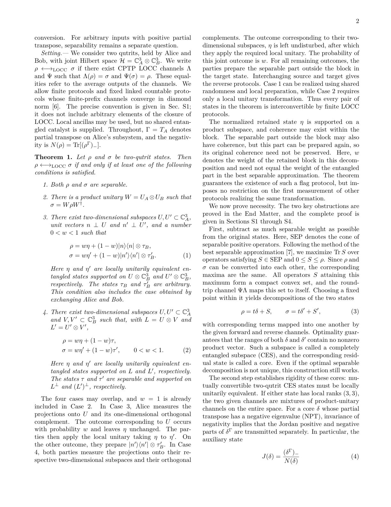
<figcaption class="paper-figure-caption"><b>Fig 1.</b> Low-resolution page preview, page 2</figcaption>
</figure>
<figure class="paper-figure-card">
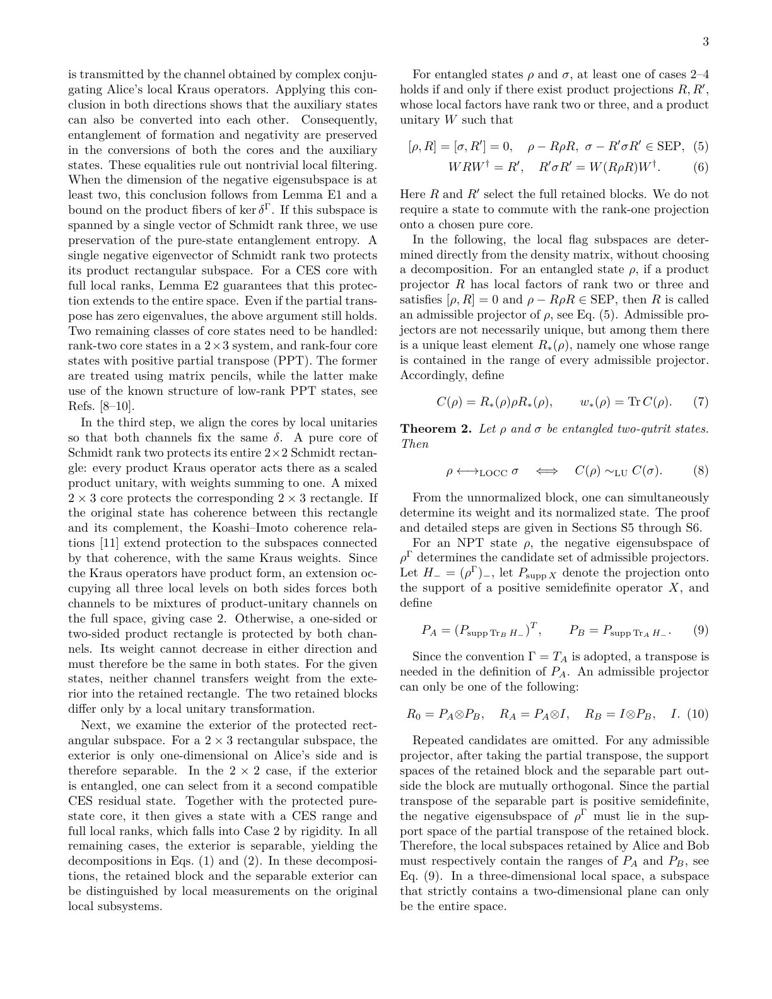
<figcaption class="paper-figure-caption"><b>Fig 2.</b> Low-resolution page preview, page 3</figcaption>
</figure>
<figure class="paper-figure-card">
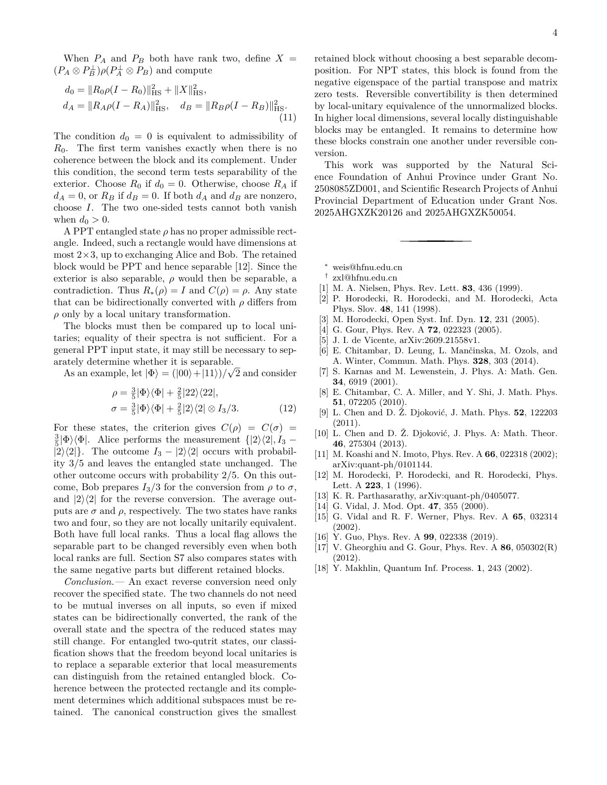
<figcaption class="paper-figure-caption"><b>Fig 3.</b> Low-resolution page preview, page 4</figcaption>
</figure>
<figure class="paper-figure-card">
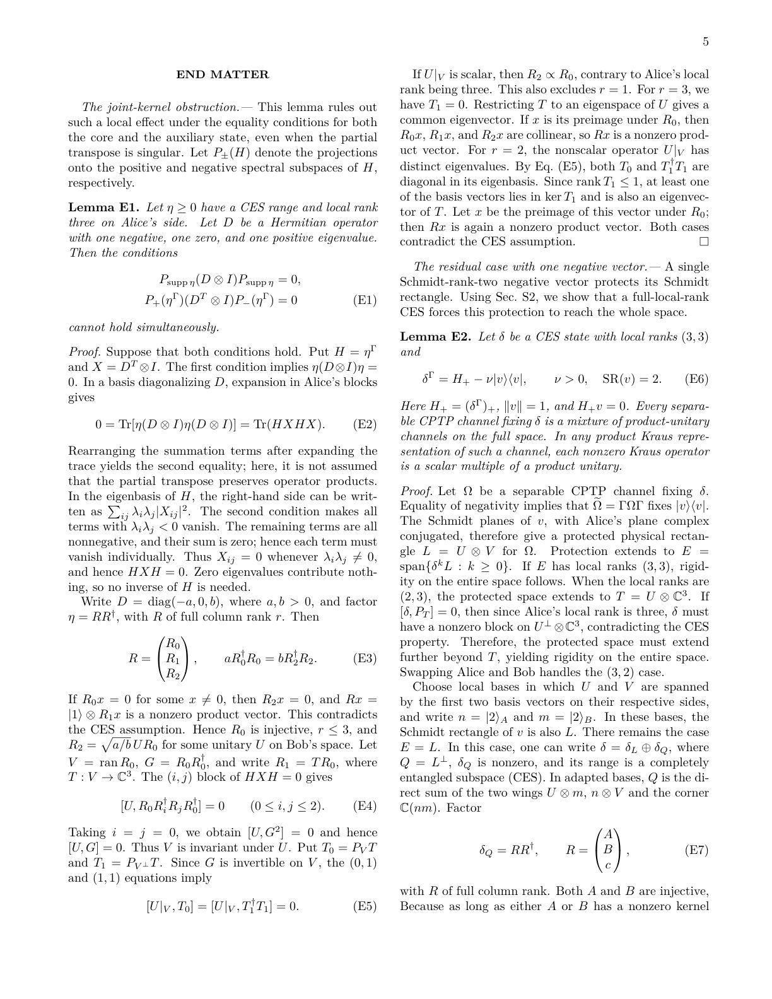
<figcaption class="paper-figure-caption"><b>Fig 4.</b> Low-resolution page preview, page 5</figcaption>
</figure>
<figure class="paper-figure-card">
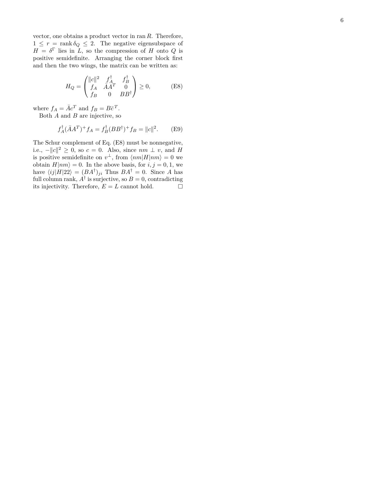
<figcaption class="paper-figure-caption"><b>Fig 5.</b> Low-resolution page preview, page 6</figcaption>
</figure>
</div>
<p><strong>Summary.</strong> This paper provides a complete mathematical classification for when two two-qutrit quantum states can be deterministically converted into each other using only local operations and classical communication (LOCC). The core finding is that this bidirectional conversion is equivalent to the local unitary equivalence of the 'retained entangled block' of the two states. The methodology involves advanced techniques like partial transposition and spectral analysis to isolate this critical, non-local component.</p>
<p><strong>Why it may be interesting.</strong> This work provides fundamental, rigorous mathematical constraints on what quantum correlations can be exchanged between parties using only local operations, which is central to quantum cryptography and quantum computation theory.</p>
<details>
<summary>Detailed structure</summary>
<p><strong>Main problem.</strong> The paper aims to provide a complete classification of reversible entanglement transformations (conversions) between two-qutrit quantum states ($
ho \leftrightarrow_{    ext{LOCC}} \sigma$).</p>
<p><strong>Main result.</strong> Two entangled states are reversibly convertible if and only if their unique, unnormalized 'retained blocks' are locally unitarily equivalent.</p>
<p><strong>Method.</strong> The classification relies on decomposing states into separable and entangled parts, utilizing spectral analysis (especially the negative partial transpose) to identify the minimal retained block, and establishing necessary and sufficient conditions via local unitary equivalence.</p>
<p><strong>Model / system.</strong> The system consists of two qutrits (three-level quantum systems) held by Alice and Bob. The analysis is based on the mathematical framework of Local Operations and Classical Communication (LOCC) transformations.</p>
<p><strong>Key observables.</strong> The retained block ($C(
ho)$), the weight ($w$), the partial transpose ($
ho^\Gamma$), and the local unitary equivalence class of the core state.</p>
<p><strong>Important parameters / regimes.</strong> The dimensionality of the system (two qutrits, $3 	imes 3$), the requirement for exact, deterministic conversion, and the nature of the state (PPT vs. NPT).</p>
<p><strong>Assumptions / limitations.</strong> The analysis focuses strictly on bidirectional (reversible) conversions of a single copy, and the classification relies on the existence of a unique minimal retained block.</p>
<p><strong>Figures summary.</strong> Not specified in the notes, but the text references multiple equations (e.g., (1), (2), (5), (6), (7), (8), (9), (10), (11)) used to define criteria and relationships.</p>
<p><strong>Paper structure.</strong> The paper progresses from defining the problem (reversible LOCC conversion) to establishing the necessary structural decomposition (separable exterior + retained entangled core). It then proves the equivalence criterion by showing that the core must be preserved under local unitaries, culminating in a full classification theorem.</p>
</details>
<details>
<summary>Abstract</summary>
<p>Suppose Alice and Bob can transform one shared mixed state into another by local operations and classical communication, and can also recover the first state from the second. What can change in such a conversion? We give a complete classification of reversible conversions between two-qutrit states. We consider exact deterministic LOCC transformations of a single copy, allowing finite protocols and the countable protocols specified here. Local flags are known to allow a separable part to be replaced by local preparation while an entangled block is retained. We prove that such a decomposition is necessary for two mutually convertible entangled states that are not locally unitarily equivalent. The two parts are distinguishable by local measurements. The entangled blocks have the same weight and are locally unitarily equivalent after normalization. Each entangled state has a unique smallest retained block. Two entangled states are reversibly convertible if and only if these unnormalized blocks are locally unitarily equivalent. For a state with negative partial transpose, the smallest block can be found using the negative eigenspace of its partial transpose and at most three matrix zero tests.</p>
</details>
<p><sub><a href="#top">↑ back to top</a></sub></p>

<p><a id="paper-2610.06787"></a></p>
<h3 id="computational-entanglement-distillation-beyond-pure-states-efficient-protocols-and-fundamental-limitations"><a href="http://arxiv.org/abs/2610.06787v1">Computational entanglement distillation beyond pure states: efficient protocols and fundamental limitations</a></h3>
<p><strong>Authors:</strong> Takeru Utsumi, Jacopo Rizzo, Ryuji Takagi, Lorenzo Leone<br>
<strong>Type:</strong> theory · <strong>Category:</strong> quantum information and computing · <strong>PDF:</strong> <a href="https://arxiv.org/pdf/2610.06787v1">https://arxiv.org/pdf/2610.06787v1</a><br>
<strong>Analysis basis:</strong> full PDF text, analyzed in chunks</p>
<div class="figure-strip-hint">↔ Scroll figures horizontally</div>
<div class="paper-figures-scroll">
<figure class="paper-figure-card">
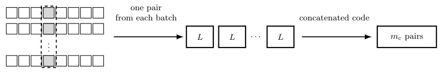
<figcaption class="paper-figure-caption"><b>Fig 1.</b> FIG. 1. The code blocks of Corollary 19. Each of the kc batches yields mb pairs of qubits, and the pairs with the same index in all the batches form a code block of kc = LN pairs, which is in a product state. The concatenated code of Lemma 18 divides each code block into N inner blocks of L pairs and turns it into mc pairs.</figcaption>
</figure>
<figure class="paper-figure-card">
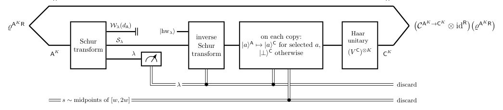
<figcaption class="paper-figure-caption"><b>Fig 2.</b> FIG. 2. The channel CAK→CK of Lemma 25. The Schur transform separates λ, Wλ(dA), and Sλ; λ is measured, Wλ(dA) is discarded and replaced by |hwλ⟩, and the inverse Schur transform is applied. Each copy is then mapped into C according to the row indices selected by λ and s in Eq. (D3), followed by V C. Double lines represent classical registers; R is untouched.</figcaption>
</figure>
<figure class="paper-figure-card">
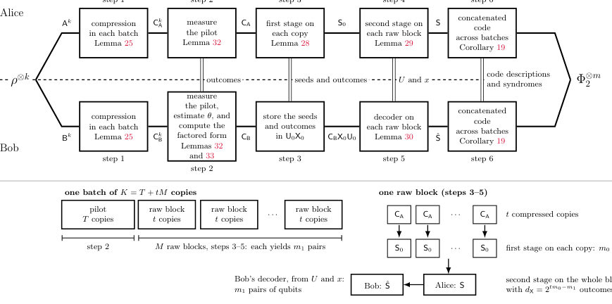
<figcaption class="paper-figure-caption"><b>Fig 3.</b> FIG. 3. Structure of the protocol. Upper part: the operations of Alice and Bob in time order, labeled by the steps of Appendix D 2, where double lines represent classical communication from Alice to Bob. Steps 1–5 are carried out independently in each of the kc batches. Lower left: each batch of K copies consists of a pilot of T copies and M raw blocks of t copies, and each raw block yields m1 pairs of qubits. Lower right: the first stage acts on each compressed copy separately and the second stage on the whole raw block, which keeps the number of outcomes of the second stage polynomial, and Bob’s decoder then produces ˆS from the seed and the outcome that Alice reports. The code blocks...</figcaption>
</figure>
</div>
<p><strong>Summary.</strong> This work advances the theory of entanglement distillation by moving beyond idealized pure-state assumptions to mixed states under resource constraints. It rigorously proves that the Rényi coherent information dictates the optimal distillation rate for both limited-copy and computationally efficient protocols. This provides a novel operational meaning for this information-theoretic quantity in practical quantum information tasks.</p>
<p><strong>Why it may be interesting.</strong> It provides a rigorous, resource-aware framework for quantifying entanglement, which is crucial for designing realistic quantum communication protocols that must operate under physical limitations.</p>
<details>
<summary>Detailed structure</summary>
<p><strong>Main problem.</strong> The paper addresses the challenge of characterizing entanglement distillation rates from mixed quantum states when physical resources, such as the number of available copies or computational power, are limited.</p>
<p><strong>Main result.</strong> The Rényi coherent information is identified as the optimal rate-determining quantity for entanglement distillation in both the sample-efficient (limited copies) and computationally efficient regimes.</p>
<p><strong>Method.</strong> The authors develop and analyze universal one-way LOCC protocols for distillation, employing information-theoretic bounds derived from Rényi entropy and comparing them against achievable rates under specific resource constraints.</p>
<p><strong>Model / system.</strong> The study focuses on bipartite quantum states (mixed states) shared between two parties (Alice and Bob) on $\Theta(n)$ qubits, aiming to distill ebits using local operations and classical communication (LOCC).</p>
<p><strong>Key observables.</strong> Rényi coherent information ($eI_eta$), information-theoretic distillable entanglement ($ED$), and the distillation rate ($R$).</p>
<p><strong>Important parameters / regimes.</strong> The analysis hinges on the resource constraints: limited copies ($k=	ext{poly}(n)$) and polynomial circuit size, as well as the state rank.</p>
<p><strong>Assumptions / limitations.</strong> The results rely on constructing specific families of mixed states (e.g., 'spike states') and assuming polynomial rank constraints for the most efficient protocols.</p>
<p><strong>Paper structure.</strong> The paper progresses by first establishing the idealized information-theoretic bounds, then tackling the sample-efficient regime, followed by the computationally efficient frontier, culminating in the characterization of the rate by the Rényi coherent information in both constrained settings.</p>
</details>
<details>
<summary>Abstract</summary>
<p>The information-theoretic approach to entanglement typically relies on arbitrarily many input copies and unboundedly complex operations; however, the available resources are constrained in reality. This motivates the study of entanglement theory with limited resources. One of its central questions is which quantities characterize entanglement manipulations, and so far, only the idealized case of pure states has been well explored. In this work, we address entanglement distillation from mixed states and identify the Rényi coherent information as the quantity determining the optimal rate in the worst case under two distinct resource constraints. We first characterize the sample-efficient regime, in which unbounded computational power is allowed. Our universal protocol achieves this rate without knowledge of the input state under certain polynomial rank constraints. This rate is optimal among universal protocols: we construct states whose distillable entanglement is nearly extensive, yet from which no universal sample-efficient protocol attains a rate above their Rényi coherent information. We then push this characterization to the computationally efficient frontier: the same bound holds for any efficient protocol even when the input state is known, and another universal protocol achieves this rate efficiently under additional polynomial constraints on the marginal ranks. Overall, our results give the Rényi coherent information a novel operational meaning in two computational settings: universal distillation with limited copies and efficient distillation even with knowledge of the input state.</p>
</details>
<p><sub><a href="#top">↑ back to top</a></sub></p>

<p><a id="paper-2610.06626"></a></p>
<h3 id="confined-riesz-gas-from-newtonian-dynamics-to-emergent-hydrodynamics"><a href="http://arxiv.org/abs/2610.06626v1">Confined Riesz gas: From Newtonian Dynamics to Emergent Hydrodynamics</a></h3>
<p><strong>Authors:</strong> Indranil Mukherjee, Abhishek Dhar, Manas Kulkarni<br>
<strong>Type:</strong> both · <strong>Category:</strong> statistical mechanics · <strong>PDF:</strong> <a href="https://arxiv.org/pdf/2610.06626v1">https://arxiv.org/pdf/2610.06626v1</a><br>
<strong>Analysis basis:</strong> full PDF text, analyzed in chunks</p>
<div class="figure-strip-hint">↔ Scroll figures horizontally</div>
<div class="paper-figures-scroll">
<figure class="paper-figure-card">
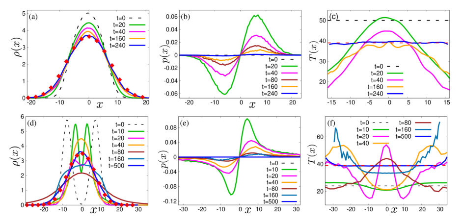
<figcaption class="paper-figure-caption"><b>Fig 1.</b> FIG. 1. (a), (b), (c) Newtonian dynamics results, following Eq. (5), for the time evolution of density [Eq. (7)], momentum [Eq. (8)] and temperature [Eq. (9)] fields, starting from the initial conditions corresponding to a dome-like initial profile (d), (e), (f) time evolution of density, momentum and temperature fields, starting from the initial conditions corresponding to a Newton-cradle-type initial profile. For both initial conditions, we consider N = 64 and average over 104 realizations. For (a), the steady state has been reached around t ∼240, and for (d), the steady state has been reached around t ∼500. The red squares in (a) and (d) are the expected steady-state density profiles...</figcaption>
</figure>
<figure class="paper-figure-card">
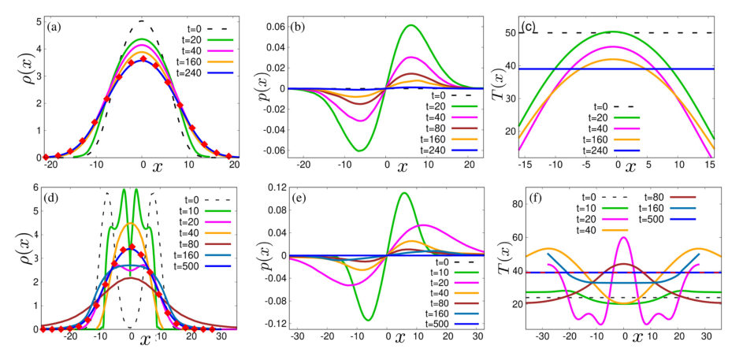
<figcaption class="paper-figure-caption"><b>Fig 2.</b> FIG. 2. Evolution of the density, momentum, and temperature profiles, obtained from the numerical simulation of the hydrodynamic equations in Eqs. (14)-(16) starting from the same initial condition as used in the Newtonian dynamics simulations of Fig. 1. The initial conditions in (a) - (c) correspond to a dome-like initial profile, and (d) - (f) correspond to a Newton- cradle-type initial profile. Other parameters considered are ξ = 0.25, κ = 0.15. For (a), the steady state has been reached around t ∼240, and for (d), the steady state has been reached around t ∼500, which is in agreement with the steady-state time scales obtained via Newtonian dynamics in Fig. 1. The red squares in (a) and...</figcaption>
</figure>
<figure class="paper-figure-card">
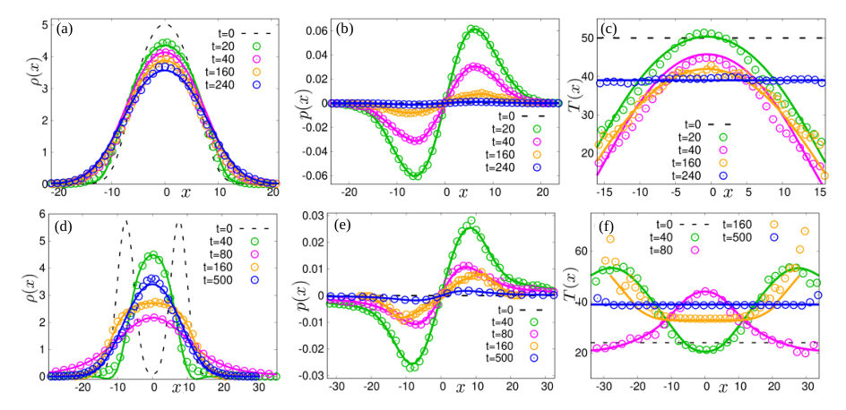
<figcaption class="paper-figure-caption"><b>Fig 3.</b> FIG. 3. Comparison of the density, momentum, and temperature profiles at different time steps, obtained from the Newtonian dynamics following Eq. (5) (circles) with the numerical simulation of the hydrodynamic equations in Eqs. (14)-(16) (solid lines). Panels (a)-(c) show results for a dome-like initial profile, while panels (d)-(f) show results for a Newton-cradle-type initial profile, with ξ = 0.25, κ = 0.15. All other parameters for the Newtonian dynamics and the hydrodynamic simulations are the same as in Figs. 1 and 2, respectively.</figcaption>
</figure>
<figure class="paper-figure-card">
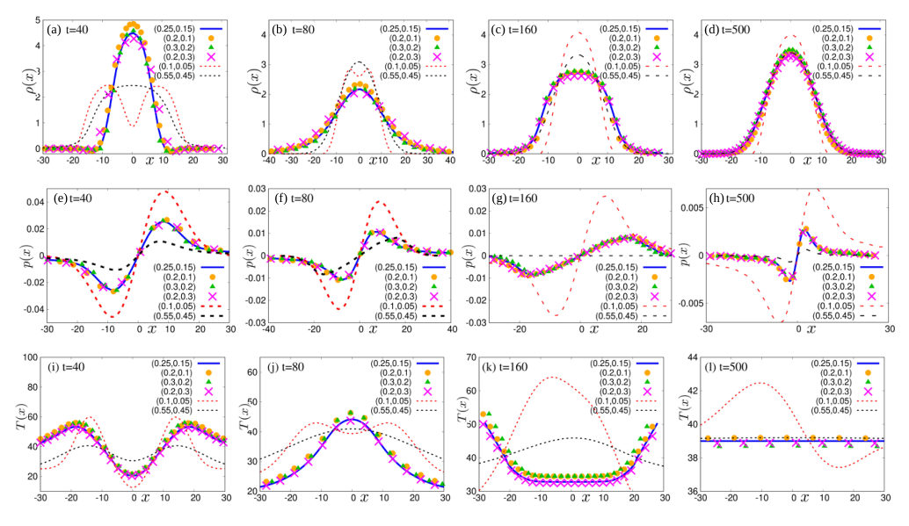
<figcaption class="paper-figure-caption"><b>Fig 4.</b> Figure 3 (d)-(f) in the main text shows this comparison for Newton’s-cradle–type case over a broad time window, using the same dissipative parameters (ξ, κ) = (0.25, 0.15) as in the dome-like case.</figcaption>
</figure>
</div>
<p><strong>Summary.</strong> This paper rigorously connects the microscopic, Newtonian dynamics of the Riesz gas to its macroscopic behavior using a hydrodynamic framework. By simulating the system from highly non-equilibrium states, the authors demonstrate that the evolution is quantitatively captured by continuum equations involving viscosity and thermal conductivity. This establishes a powerful theoretical bridge between particle-level interactions and continuum physics for systems with power-law forces.</p>
<p><strong>Why it may be interesting.</strong> It provides a concrete, first-principles validation of continuum hydrodynamics for a complex, interacting classical system with power-law interactions, bridging microscopic dynamics to macroscopic transport theory.</p>
<details>
<summary>Detailed structure</summary>
<p><strong>Main problem.</strong> The study aims to establish a quantitative link between the real-time, microscopic dynamics of the Riesz gas (RG) governed by Newtonian mechanics and its macroscopic evolution described by a continuum hydrodynamic framework.</p>
<p><strong>Main result.</strong> Excellent and robust agreement is found between the full time evolution from Newtonian simulations and the three-field hydrodynamic theory across various initial conditions and timescales.</p>
<p><strong>Method.</strong> The authors combine large-scale Newtonian molecular dynamics simulations with the derivation and numerical solution of coupled hydrodynamic equations incorporating bulk viscosity and thermal conductivity.</p>
<p><strong>Model / system.</strong> The system is the Riesz gas, characterized by particles interacting via power-law potentials and confined by a quadratic trap. The dynamics are analyzed by coarse-graining the system into fields for density, velocity, and temperature.</p>
<p><strong>Key observables.</strong> Time evolution of density ($
ho$), momentum ($\mathbf{p}$), and temperature ($T$) profiles.</p>
<p><strong>Important parameters / regimes.</strong> Power-law exponent ($k$), interaction strength ($J$), trap frequency ($\omega$), and phenomenological transport coefficients ($\xi$ and $\kappa$).</p>
<p><strong>Assumptions / limitations.</strong> The hydrodynamic description relies on introducing phenomenological transport coefficients ($\xi$ and $\kappa$), and the comparison is most robust for parameters near specific reference values.</p>
<p><strong>Figures summary.</strong> Figures compare the time evolution of $
ho, \mathbf{p}, T$ for dome-like and Newton-cradle-type initial conditions, contrasting results from full simulations against the hydrodynamic model predictions.</p>
<p><strong>Paper structure.</strong> The paper progresses by first defining the microscopic Hamiltonian and simulating dynamics, then deriving the coarse-grained hydrodynamic equations, and finally performing a quantitative comparison of the time evolution and steady-state profiles between the two descriptions.</p>
</details>
<details>
<summary>Abstract</summary>
<p>We investigate the real-time dynamics of the Riesz gas (RG), a paradigmatic system of particles with power-law interactions that encapsulates several many-body interacting classical systems. While the equilibrium properties of the system have been extensively studied the connection between microscopic dynamics, macroscopic evolution and thermalization has remained largely unexplored. Combining extensive large-scale Newtonian simulations with a hydrodynamic framework formulated in terms of three coarse grained fields -- density, velocity, and temperature -- we establish a direct and quantitative correspondence between the two descriptions. The hydrodynamic theory incorporates two phenomenological transport coefficients, the bulk viscosity $ξ$ and thermal conductivity $κ$, which encode dissipative effects at a macroscopic level. By analyzing representative classes of initial conditions, such as dome-like and Newton-cradle-type profiles, we find excellent agreement between microscopic and hydrodynamic evolution over a broad range of timescales, starting from relatively early all the way up to times at which steady state is attained. Notably, this agreement persists across a substantial window of $ξ$ and $κ$, demonstrating the robustness of the emergent hydrodynamic description. Our results provide a systematic validation of hydrodynamics in the RG and establish a concrete bridge between Newtonian dynamics and continuum theories in systems with power-law interactions, starting from first principles.</p>
</details>
<p><sub><a href="#top">↑ back to top</a></sub></p>

<p><a id="paper-2610.04666"></a></p>
<h3 id="correlations-decide-a-shallow-circuit-advantage"><a href="http://arxiv.org/abs/2610.04666v1">Correlations decide a shallow-circuit advantage</a></h3>
<p><strong>Authors:</strong> Zijian Gong, Zhaobin Lyu, Jingjing Hu, Dengfeng Li, Shuoming An<br>
<strong>Type:</strong> theory · <strong>Category:</strong> quantum information and computing · <strong>PDF:</strong> <a href="https://arxiv.org/pdf/2610.04666v1">https://arxiv.org/pdf/2610.04666v1</a><br>
<strong>Analysis basis:</strong> full PDF text, analyzed in chunks</p>
<div class="figure-strip-hint">↔ Scroll figures horizontally</div>
<div class="paper-figures-scroll">
<figure class="paper-figure-card">
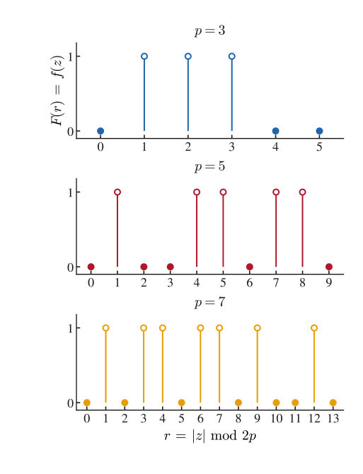
<figcaption class="paper-figure-caption"><b>Fig 1.</b> FIG. 1. Residue pattern of the target tag, the pattern a sample’s tag is read from. One panel per prime, p = 3, 5, 7. The horizontal axis is the residue, the Hamming weight |z| of the sample’s string half z reduced modulo 2p; the vertical axis is the tag F(r), the answer the sample is meant to carry. Hollow markers are F = 1 and filled markers F = 0. The tag sees z only through this pattern, which jumps at 2p −4 of the 2p adjacent residues, and that jump count is the influence 1−2/p the rest of the paper reads: flipping one bit of z changes the tag with exactly that probability.</figcaption>
</figure>
<figure class="paper-figure-card">
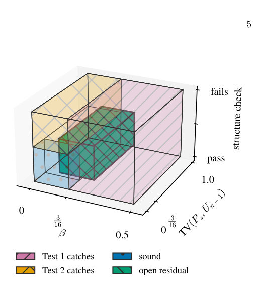
<figcaption class="paper-figure-caption"><b>Fig 2.</b> FIG. 2. The verifier as a map of where an imposter lands. Three coordinates place it: how often its answer is wrong, β = Pr[b ̸= f(z)]; how far its string half is from uniform, TV(Pz, Un−1); and whether a structure check fires, a schematic coordinate that orders the regions and carries no scale. Here Dn = (X, f(X)) is the target law, X uniform on the string cube and f the tag of Fig. 1, P the imposter’s law, Pz its string half and Un−1 the uniform law. Test 1 rejects the wrong-answer region above its level 13/72; Test 2 rejects the wrong-shape region; and a device whose string half is near uniform passes. The heavy-edged region, few wrong answers together with a string half far from uniform...</figcaption>
</figure>
<figure class="paper-figure-card">
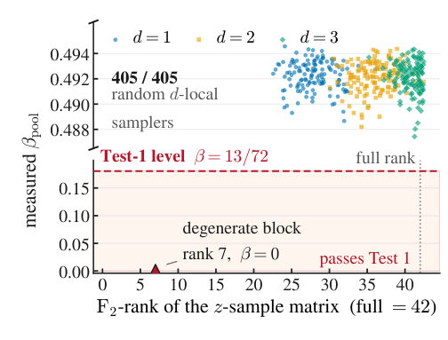
<figcaption class="paper-figure-caption"><b>Fig 3.</b> FIG. 3. On this class a low violation rate goes with rank deficiency. Each point is one of 405 random d-local samplers, d ∈{1, 2, 3}, at 42 z-bits and p = 3, each output bit an XOR of d seed bits, each locality drawn with its own color and marker shape, plus the 2p-block sampler, the construction of Sec. IV, as a triangle. The horizontal axis is the F2-rank of the sampler’s z-sample matrix; the vertical axis is its violation rate against the best member of the 172-predictor pool of App. C, a cheap stand-in for the true β whose members are the constants, the single seeds and their pairwise XORs over the first 18 seeds, rather than against the target tag f. Random samplers sit at ranks 23–42...</figcaption>
</figure>
<figure class="paper-figure-card">
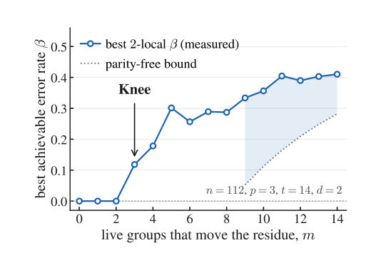
<figcaption class="paper-figure-caption"><b>Fig 4.</b> FIG. 4. The collapse theorem, measured. The horizontal axis is m, the number of live groups whose increment moves the residue |z| mod 2p, a live group being the set of output bits toggled by one free seed bit and its increment the weight change that toggle causes; the vertical axis is the best violation rate β = Pr[b ̸= f(z)] the cascade construction reaches. The sweep is at 112 z-bits, p = 3, t = 14 independent single-seed groups and locality d = 2. Measured β = 0 while m ≤d, rising to 0.118 at m = 3, the knee. Dotted: the general parity-free smoothing bound 1</figcaption>
</figure>
<figure class="paper-figure-card">
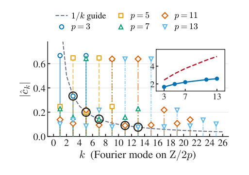
<figcaption class="paper-figure-caption"><b>Fig 5.</b> FIG. 5. What the collapse theorem prices. Main panel: the Fourier coefficients |ˆck| of the tag’s sign (−1)F at mode k on Z/2p, one curve per prime p = 3, 5, 7, 11, 13, with F the tag of Fig. 1. The support lies entirely on odd k, and the coefficient at k = p is exactly 1/p, circled, against the dashed 1/k guide: that coefficient is the parity leak, the one term of the spectrum that survives when every other character decays. Inset: the sum of the coefficients against p, dashed at the machine-checked bound √2p, which is loose since the growth is logarithmic in p. The parity-aligned even-weight example of Sec. V is measured in Fig. S1.</figcaption>
</figure>
</div>
<p><strong>Summary.</strong> This paper rigorously analyzes the boundary between quantum and classical computation for shallow circuits. It proves that the quantum advantage is detectable not by measuring distance, but by analyzing specific patterns in the single-bit and pair correlations of the generated samples. The work establishes a powerful, sample-optimal test that is formally verified using advanced proof assistants.</p>
<p><strong>Why it may be interesting.</strong> It provides a rigorous, information-theoretic characterization of quantum advantage for shallow circuits, moving beyond simple distance metrics and focusing on structural correlations.</p>
<details>
<summary>Detailed structure</summary>
<p><strong>Main problem.</strong> To determine what classical correlations (single-bit and pair correlations) are necessary and sufficient to certify the computational advantage of constant-depth quantum circuits over shallow classical circuits.</p>
<p><strong>Main result.</strong> The advantage is decided by the classical class's pattern of correlations, not by a simple distance measure, and a specific fifth check based on these correlations is shown to be sound and effective.</p>
<p><strong>Method.</strong> The authors use an inequality relating Total Variation distance to the violation rate ($eta$) and the deviation of the string half from uniformity, leading to a dichotomy test.</p>
<p><strong>Model / system.</strong> The comparison is between quantum circuits utilizing a 43-qubit entangled resource state and shallow classical circuits with few-input gates and limited randomness.</p>
<p><strong>Key observables.</strong> Single-bit and pair correlations, the functional-violation rate ($eta$), and the Total Variation distance ($    ext{TV}$).</p>
<p><strong>Important parameters / regimes.</strong> The resource state size (43 qubits) and fidelity ($\approx 0.99$); the operating point $\epsilon = 3/8$.</p>
<p><strong>Assumptions / limitations.</strong> The current guarantee is proven for the bounded pinned-residue class, leaving two named open problems for full class coverage.</p>
<p><strong>Figures summary.</strong> Figure 1 illustrates the residue pattern of the target tag $F(r)$ for small primes, showing dependence on $|z| mod 2p$.</p>
<p><strong>Paper structure.</strong> The paper establishes a dichotomy test based on an inequality, presents five natural checks (four of which are shown to be insufficient), and proves the fifth check is sound and effective on a restricted class of samplers.</p>
</details>
<details>
<summary>Abstract</summary>
<p>Quantum computers are claimed to produce samples ordinary classical computers cannot reproduce. The sharpest such claim known pits constant-depth quantum circuits, given one entangled state per run, against shallow classical circuits of few-input gates and limited randomness. No efficient test was known that certifies such a claim from classical samples alone. Here we show that what such a test must read is decided by the classical class's pattern of single-bit and pair correlations, not by a distance. The test rests on one inequality: any machine producing the samples sits no further from the target than the fraction it mislabels plus the deviation of its string half, the bits beyond the label, from uniform. A collapse theorem, machine-checked in the Lean~4 proof assistant, confines that second term, one setting of the sampler's random input bits at a time. Four natural checks provably fail; a fifth, reading those same correlations, catches a far-from-target construction they cannot reach, and is exact on the class of few-input gates. The label test is proven and sample-optimal in its own tolerance up to a logarithmic factor; the fifth check is sound, not only effective, on the bounded pinned-residue class, pairwise-uniform samplers whose residue, the string's weight modulo the prime, is pinned by few seeds and whose seed sharing is bounded. What binds an experiment is the $43$-qubit entangled resource state at fidelity near $0.99$, not the readout. What remains are two named open problems; a positive answer to the first would extend the guarantee to the full class.</p>
</details>
<p><sub><a href="#top">↑ back to top</a></sub></p>

<p><a id="paper-2610.04908"></a></p>
<h3 id="custom-penalty-qaoa-via-walsh-hadamard-transform"><a href="http://arxiv.org/abs/2610.04908v1">Custom Penalty QAOA via Walsh-Hadamard Transform</a></h3>
<p><strong>Authors:</strong> Xin Wei LEE, Siong Thye GOH, Hoong Chuin LAU<br>
<strong>Type:</strong> theory · <strong>Category:</strong> quantum information and computing · <strong>PDF:</strong> <a href="https://arxiv.org/pdf/2610.04908v1">https://arxiv.org/pdf/2610.04908v1</a><br>
<strong>Analysis basis:</strong> full PDF text, analyzed in chunks</p>
<div class="figure-strip-hint">↔ Scroll figures horizontally</div>
<div class="paper-figures-scroll">
<figure class="paper-figure-card">
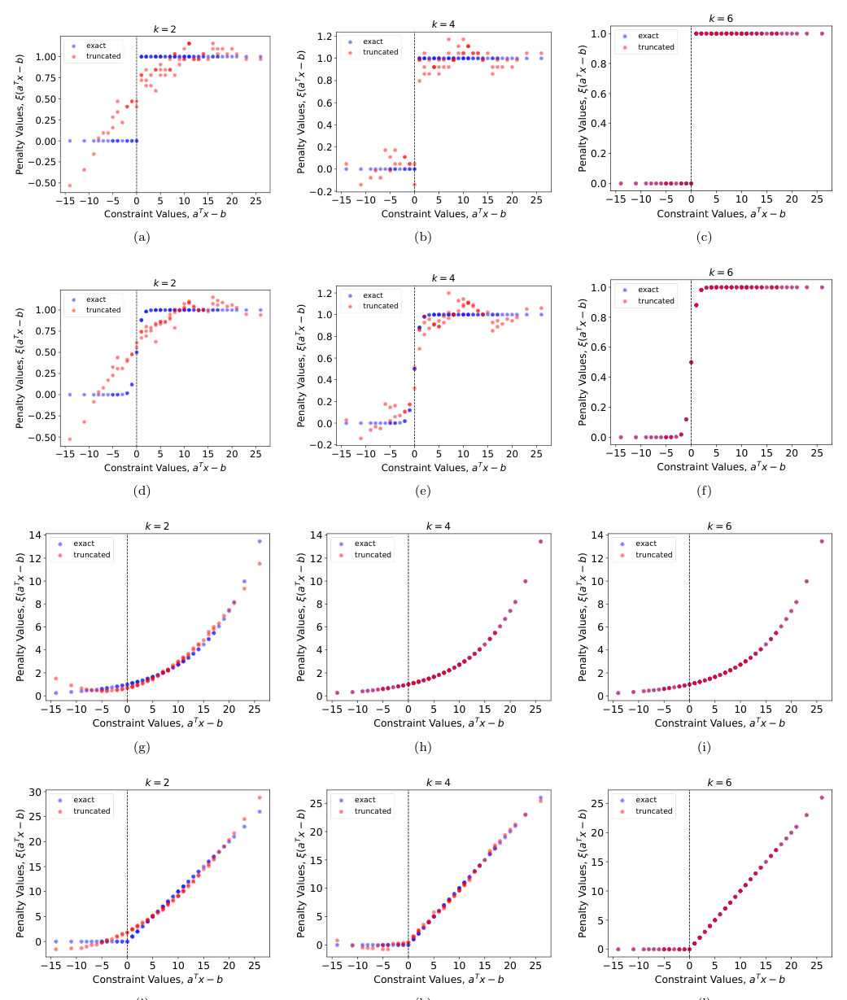
<figcaption class="paper-figure-caption"><b>Fig 1.</b> FIG. 2. Comparison of the penalty values given by the truncated Walsh spectrum Tkϕ with the original penalty function ϕ. First, second and third column correspond to k = 2, 4, 6 respectively. (a)–(c) Heaviside step penalty in Eq. (14); (d)–(f) Hyperbolic tangent penalty 1 2(tanh(y) + 1); (g)–(i) Exponential penalty exp(0.1y); (j)–(l) ReLU in Eq. (54). The vertical dashed line shows a⊤x −b = 0 the boundary between feasible and infeasible constraint values.</figcaption>
</figure>
<figure class="paper-figure-card">
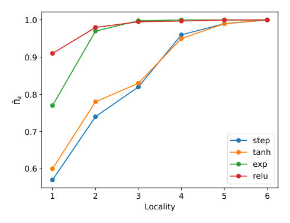
<figcaption class="paper-figure-caption"><b>Fig 2.</b> FIG. 3. The fraction of retained power Πk of the truncated Walsh series against the truncation degree k Eq. (38). Differ- ent functions require different degree to achieve the full spec- tral power. The exponential and ReLU achieved full spectral power at k = 3, whereas Heaviside and hyperbolic tangent only achieved full spectral power at k = 6 (the full spectrum).</figcaption>
</figure>
<figure class="paper-figure-card">

<figcaption class="paper-figure-caption"><b>Fig 3.</b> Fig. 4(d) shows the loss gap, which is defined as</figcaption>
</figure>
<figure class="paper-figure-card">
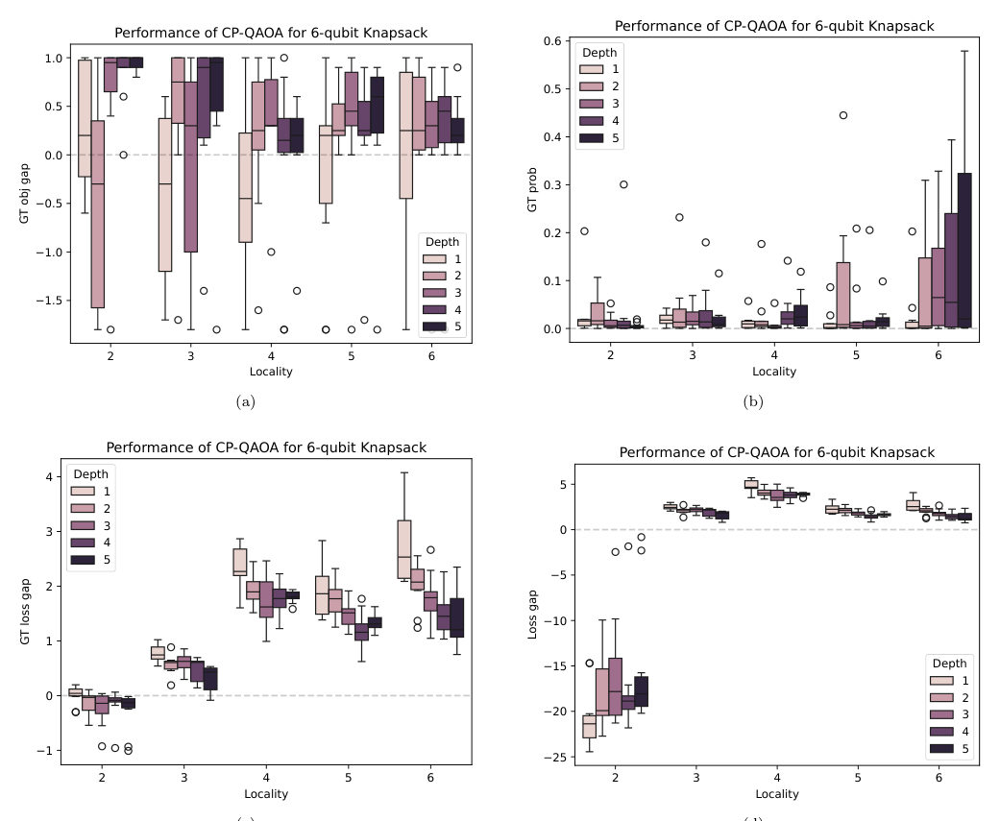
<figcaption class="paper-figure-caption"><b>Fig 4.</b> FIG. 4. Evaluation metrics for a 6-qubit Knapsack problem. WCP-QAOA is tested at different localities k (truncation) and QAOA depths. We use the bit-string with the highest probability as the solution from QAOA. Each box shows the result for 10 random initializations. The gaps have values with 0 closest to the target and larger magnitudes further to the target. (a) The objective gap with the ground truth (GT). (b) The probability of sampling the GT. (c) The gap of the final loss value with the GT. (d) The gap of the final loss value with the lowest eigenvalue in the Hamiltonian. The lowest eigenvalue of the Hamiltonian is not necessarily (in fact, most of the cases) the GT for k &lt; n.</figcaption>
</figure>
</div>
<p><strong>Summary.</strong> This paper proposes the Walsh custom penalty QAOA (WCP-QAOA) to solve constrained optimization problems in quantum computing. It leverages the Walsh-Hadamard transform to encode complex inequality penalties directly into the QAOA phase separator as a product of commuting Pauli-Z operators. This method avoids the qubit overhead and approximation errors associated with traditional penalty methods, offering a theoretically sound and computationally efficient approach for quantum constraint handling.</p>
<p><strong>Why it may be interesting.</strong> The technique provides a powerful, resource-efficient way to encode complex physical constraints (like inequalities) into quantum circuits without resorting to ancilla qubits or Trotter approximations, which is highly relevant for building practical quantum optimization hardware.</p>
<details>
<summary>Detailed structure</summary>
<p><strong>Main problem.</strong> The paper addresses the difficulty of implementing inequality constraints in combinatorial optimization within the QAOA framework without increasing the qubit count or distorting the optimization landscape.</p>
<p><strong>Main result.</strong> They introduce the Walsh custom penalty QAOA (WCP-QAOA), showing that the Walsh-Hadamard transform allows the penalty term to be exactly represented as a weighted sum of commuting Pauli-Z strings.</p>
<p><strong>Method.</strong> The core method involves using the Walsh-Hadamard transform to convert a non-linear penalty function into a diagonal operator form, enabling the phase separator in QAOA to be implemented exactly as a product of single-term phase gates.</p>
<p><strong>Model / system.</strong> The model is the QAOA algorithm applied to constrained binary optimization problems. The Hamiltonian is modified by a custom penalty term derived from the penalty function $\phi(\mathbf{x})$ via the WHT.</p>
<p><strong>Key observables.</strong> The Walsh coefficients $\hat{\phi}(S)$ of the penalty function, and the resulting energy spectrum of the constrained Hamiltonian.</p>
<p><strong>Important parameters / regimes.</strong> The truncation degree $k$ of the Walsh expansion, and the penalty strength $\eta$ (e.g., for the exponential penalty).</p>
<p><strong>Assumptions / limitations.</strong> The primary assumption is that the penalty function can be efficiently represented by its Walsh coefficients, and the approximation error from truncation must be managed to preserve the feasible-infeasible ordering.</p>
<p><strong>Paper structure.</strong> The paper first establishes the limitations of standard QUBO formulations. It then introduces the WHT as the solution, detailing how the penalty term factorizes into Pauli-Z strings. Key sections cover the efficient computation of Walsh coefficients and analyze the approximation quality of the resulting truncated Hamiltonian.</p>
</details>
<details>
<summary>Abstract</summary>
<p>Inequality constraints in combinatorial optimization are conventionally handled by introducing slack variables and quadratic penalties, which increase the qubit count and distort the optimization landscape. Slack-free formulations instead apply a nonlinear custom penalty function directly to the constraint, which are difficult to be implemented in quantum approximate optimization algorithm (QAOA). We show that the Walsh--Hadamard transform (WHT) removes this obstruction for any penalty function: a penalty applied to a linear constraint is exactly a weighted sum of Pauli-$Z$ strings. We propose this framework as the Walsh custom penalty QAOA (WCP-QAOA). Truncating the expansion at Walsh degree $k$ costs $\mathcal{O}(n^k)$ Pauli terms and leaves the qubit count untouched. The truncation is the optimal degree-$k$ approximation of the penalty in $L^2$, and we give a condition on the discarded Walsh coefficients under which the truncated Hamiltonian still ranks every feasible solution below every infeasible one. Since evaluating a Walsh coefficient from its definition requires all $2^n$ penalty values, we give an algorithm that returns any coefficient in sub-exponential time, so that the degree-$k$ Hamiltonian is obtained in time polynomial in $n$ for fixed $k$. We show that for the exponential penalty, there exists a closed product form of WHT, and hence a closed form expression to calculate the Walsh coefficients. We identify structural shortcuts that shorten the exact spectrum. We also tested WCP-QAOA in solving a 6-qubit knapsack problem.</p>
</details>
<p><sub><a href="#top">↑ back to top</a></sub></p>

<p><a id="paper-2610.06815"></a></p>
<h3 id="cv-qaoa-efficient-low-depth-quantum-optimization-of-continuous-variables"><a href="http://arxiv.org/abs/2610.06815v1">CV-QAOA: Efficient Low-Depth Quantum Optimization of Continuous Variables</a></h3>
<p><strong>Authors:</strong> Sriram Bharadwaj, Di Luo, Leo Zhou<br>
<strong>Type:</strong> theory · <strong>Category:</strong> quantum information and computing · <strong>PDF:</strong> <a href="https://arxiv.org/pdf/2610.06815v1">https://arxiv.org/pdf/2610.06815v1</a><br>
<strong>Analysis basis:</strong> full PDF text, analyzed in chunks</p>
<div class="figure-strip-hint">↔ Scroll figures horizontally</div>
<div class="paper-figures-scroll">
<figure class="paper-figure-card">
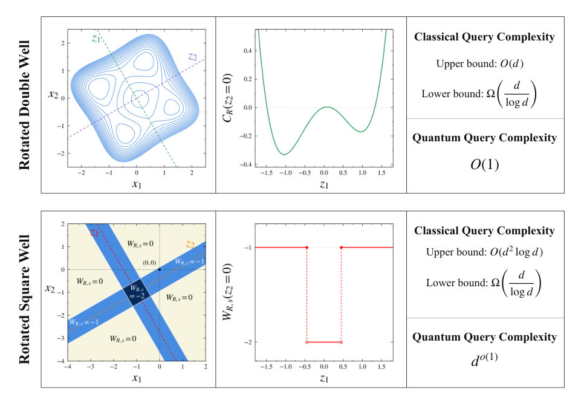
<figcaption class="paper-figure-caption"><b>Fig 1.</b> Figure 1: Summary of the CV-QAOA framework and the main quantum advantages established in this work. The figure compares two complementary optimization regimes controlled by the initial width parameter σ. The top panels show the rotated double well family: a two-dimensional slice of the rotated high-dimensional landscape and a hidden-coordinate slice revealing the underlying one-dimensional double well structure. The bottom panels show the rotated square well family: a two-dimensional view and a hidden-coordinate slice, illustrating a flat staircase-like landscape whose global optimum lies in the overlap of the hidden wells. The displayed classical query complexities are upper bounds: O(d)...</figcaption>
</figure>
<figure class="paper-figure-card">

<figcaption class="paper-figure-caption"><b>Fig 2.</b> Figure 2: The optimized analytical expectation value minβ,γ ⟨w⟩as a function of the initial width σ for the one-dimensional Styblinski-Tang function. The red dashed line marks the false minimum, while the green dashed line marks the true minimum.</figcaption>
</figure>
<figure class="paper-figure-card">

<figcaption class="paper-figure-caption"><b>Fig 3.</b> Figure 3: A plot of the mean number of oracle queries Q versus dimension for the two structure- aware classical algorithms (log-log axes). The error bars are 95% confidence intervals (100 runs per dimension for the tomography; 50 runs for the random walk). The random ray tomography (orange) follows the parameter-free theoretical curve Q ∝d2 ln d with leading constant 2CptCdir = 160 (from Cpt = 10 points and Cdir = 8 directions per dimension), whereas the adaptive random walk (blue) follows a steeper Q ∝d3/ ln d (R2 = 0.993, fit for d ≥3).</figcaption>
</figure>
<figure class="paper-figure-card">

<figcaption class="paper-figure-caption"><b>Fig 4.</b> Figure 4: Effective-evaluation time-to-solution for classical baselines on the rotated square well problem. Left: We plot the lower-envelope TTS0.90 over the algorithmic tuning parameter θ for each dimension d. The baselines are simulated annealing, simulated annealing with local search, basin hopping, and path integral Monte Carlo with M = 1 and M = 64 beads. For the M = 64 PIMC curve, bead evaluations are counted in the effective batched convention, so that 64 bead evaluations are charged as one effective evaluation. All methods are run on randomly rotated and shifted instances with L = 1 and δ = 0.1. Error bars are obtained by propagating a 95% binomial confidence interval for the...</figcaption>
</figure>
<figure class="paper-figure-card">

<figcaption class="paper-figure-caption"><b>Fig 5.</b> Figure 5: The above plot shows the final probability distributions after 1-step and depth-two CV- QAOA respectively, and the initial distribution is displayed on the left-most panel. The red cross denotes the location of the minimum. We consider the function F(x, y) = 1</figcaption>
</figure>
</div>
<p><strong>Summary.</strong> This paper introduces and rigorously analyzes the Continuous-Variable QAOA (CV-QAOA) for solving high-dimensional continuous optimization problems. It proves that CV-QAOA achieves significant query complexity advantages over existing quantum and classical methods for structured problems like the RDW. The findings establish a strong theoretical case for the utility of CV-QAOA in quantum computation.</p>
<p><strong>Why it may be interesting.</strong> The work provides concrete, theoretically proven quantum advantages for optimization problems in continuous variable settings, which is highly relevant for developing practical quantum algorithms.</p>
<details>
<summary>Detailed structure</summary>
<p><strong>Main problem.</strong> The paper develops and analyzes a Continuous-Variable Quantum Approximate Optimization Algorithm (CV-QAOA) designed to efficiently find the minimum of high-dimensional continuous cost functions.</p>
<p><strong>Main result.</strong> CV-QAOA demonstrates superior query complexity compared to Quantum Hamiltonian Descent (QHD) for specific hard problems like the Rotated Double Well (RDW), achieving near-optimal scaling for certain landscapes.</p>
<p><strong>Method.</strong> The analysis involves rigorous theoretical proofs comparing the query complexity of CV-QAOA against classical and quantum lower bounds for various cost function families.</p>
<p><strong>Model / system.</strong> The optimization is performed on continuous-variable cost functions $C(\mathbf{x}): \mathbb{R}^d 	o \mathbb{R}$, implemented using bosonic modes and the $p$-step CV-QAOA Hamiltonian structure.</p>
<p><strong>Key observables.</strong> Query complexity (number of quantum/classical queries) required to reach the global minimum for specific cost functions (e.g., RDW, RSW).</p>
<p><strong>Important parameters / regimes.</strong> Depth $d$ (dimension), number of QAOA steps $p$, and the structure of the cost function (convex, RDW, RSW).</p>
<p><strong>Assumptions / limitations.</strong> The analysis relies on a defined query model for quantum and classical oracle access to the cost function, and specific assumptions about the landscape structure (e.g., global flatness for RSW).</p>
<p><strong>Figures summary.</strong> Figure 1 compares query complexities for RDW and RSW, contrasting classical upper bounds with quantum lower/upper bounds.</p>
<p><strong>Paper structure.</strong> The paper progresses by defining the CV-QAOA framework, proving performance guarantees for convex quadratics, analyzing the RDW case (showing improvement over QHD), and finally tackling the challenging RSW case to establish query complexity separations.</p>
</details>
<details>
<summary>Abstract</summary>
<p>We study a Continuous-Variable Quantum Approximate Optimization Algorithm (CV-QAOA) for high-dimensional continuous optimization. Our formulation extends an earlier CV-QAOA proposal with a variationally optimized initial state and recovers the convergence guarantees of Quantum Hamiltonian Descent (QHD) in the high-depth limit. We prove rigorous performance guarantees of CV-QAOA on several families of cost functions. First, we show $d$-step CV-QAOA minimizes any $d$-dimensional strictly convex quadratic function with $2d$ quantum queries to the cost function. We then analyze a family of nonconvex "Rotated Double Well" (RDW) functions with $2^d$ local minima introduced by arXiv:2311.00811. While prior work showed QHD reaches its global minimum with $\tilde O(d^3)$ queries, we prove that 1-step CV-QAOA solves RDW with just two quantum queries. Although general-purpose classical solvers need superpolynomial time for RDW and structure-awareness can reduce the cost to polynomial time, we show that the 1-step CV-QAOA protocol can be efficiently dequantized, and that a gradient-aligned line search succeeds with $O(d)$ queries, nearly matching the information-theoretic $Ω(d/\log d)$ query lower bound. To move beyond the dequantizable regime, we introduce a ``Rotated Square Well'' (RSW) problem, whose globally flat landscape suppresses useful local gradient information. For this family, we show that an adiabatic evolution simulated by CV-QAOA can reach the global minimum using $d^{o(1)}$ queries. On the other hand, any classical algorithm that learn the hidden rotation in RSW provably requires $Ω(d^2/\log d)$ queries, a bound we nearly match with an explicit $Θ(d^2\log d)$-query classical algorithm.Numerical simulations on deflected corrugated spring and Easom functions illustrate the promising performance of CV-QAOA on more general problems.</p>
</details>
<p><sub><a href="#top">↑ back to top</a></sub></p>

<p><a id="paper-2610.06820"></a></p>
<h3 id="designing-group-valued-codes-with-full-regular-low-weight-bases"><a href="http://arxiv.org/abs/2610.06820v1">Designing Group-Valued Codes with Full Regular Low-Weight Bases</a></h3>
<p><strong>Authors:</strong> Jong Yeon Lee<br>
<strong>Type:</strong> theory · <strong>Category:</strong> quantum information and computing · <strong>PDF:</strong> <a href="https://arxiv.org/pdf/2610.06820v1">https://arxiv.org/pdf/2610.06820v1</a><br>
<strong>Analysis basis:</strong> full PDF text, analyzed in chunks</p>
<div class="figure-strip-hint">↔ Scroll figures horizontally</div>
<div class="paper-figures-scroll">
<figure class="paper-figure-card">

<figcaption class="paper-figure-caption"><b>Fig 1.</b> FIG. 1. Obstruction to full regularity. LP code M45 5,9 from logical spectroscopy [1, Sec. V], with a fully populated monomial 5 × 9 constituent at P = 45, of rank five outside t = 1. The blue part contains 16 regular copies, accounting for 720 logical pairs. The 64 additional invariant pairs make the component multiplicities unequal, obstructing full regularity. Labels below each factor give its degree over F2.</figcaption>
</figure>
<figure class="paper-figure-card">

<figcaption class="paper-figure-caption"><b>Fig 2.</b> FIG. 2. Canonical pair construction. (a) For the 3 × 5 constituent A = (D E), only the pivot block D is square; F = D−1E determines the kernel vectors’ pivot entries. The 5 × 5 array represents qubit blocks; the omitted 3 × 3 array is zero, so HX tests each column and HZ each row against A. The illustrated seeds share only the unit entry (i, j). For arbitrary seed labels, x† ijzkl = (v† i uk)(u† jvl) = δikδjl, proving M = I for the full frame. (b) The PP cofactor vectors adj(DX)HX[:, a] and adj(DZ)HZ[:, a] occupy disjoint pivot sets P and P′. For the illustrated a = 3 pair, column 7 is zero; it is the other pair’s free column. Only the common free coordinates contribute to M = e X† eZ = ∆2...</figcaption>
</figure>
<figure class="paper-figure-card">

<figcaption class="paper-figure-caption"><b>Fig 3.</b> FIG. 3. Separation of d and f for CPP 24,11 (Proposition 6). Here x1, z1 are the binary trace-basis expansions of ωx3, ωz3, where x3, z3 are the normalized quaternary seeds of Proposition 5. (a) The nonzero logical functional λ vanishes on stabilizers and, by exhaustive exclusion, on every Z logical representative of weight at most 24. These classes, including the weight-24 witness zmin, lie in the proper hyperplane ker λ and cannot span LZ. The weight-25 seed z1 lies outside it. Applying λ to the Z component also excludes a width-24 mixed-Pauli basis. Logical-space positions are schematic and do not encode weight or physical geometry. (b) Actual supports of (x1, z1): both operators have...</figcaption>
</figure>
<figure class="paper-figure-card">

<figcaption class="paper-figure-caption"><b>Fig 4.</b> FIG. 4. The two parts of an exact-distance certificate. The exclusion must finish at every required search root; a verified symmetry can transfer it between CSS sectors. An unfinished search does not establish the lower bound.</figcaption>
</figure>
</div>
<p><strong>Summary.</strong> This paper introduces design principles for group-valued quantum error-correcting codes aimed at achieving low-weight, fully regular canonical logical bases. The authors establish a new parameter, frame width ($f$), and demonstrate that achieving low $f$ is a distinct challenge from achieving high code distance ($d$). The work provides concrete, high-performance code constructions for fault-tolerant quantum computation.</p>
<p><strong>Why it may be interesting.</strong> While focused on QEC, the rigorous mathematical framework involving group algebras, structural constraints, and parameter optimization (like $f$) provides deep theoretical tools applicable to analyzing complex quantum systems beyond standard stabilizer codes.</p>
<details>
<summary>Detailed structure</summary>
<p><strong>Main problem.</strong> The paper addresses the challenge of designing quantum error-correcting codes that possess low-weight, full regular canonical logical bases, which is crucial for efficient fault-tolerant quantum computation.</p>
<p><strong>Main result.</strong> The authors develop design principles for group-valued codes and provide explicit examples (LP and PP codes) demonstrating trade-offs between code distance ($d$) and the new parameter, frame width ($f$).</p>
<p><strong>Method.</strong> The methodology involves developing structural design principles for group-valued codes, using group algebra techniques, and employing exhaustive searches to certify exact code parameters.</p>
<p><strong>Model / system.</strong> The system studied is group-valued quantum error-correcting codes, specifically focusing on CSS codes defined over a group algebra $R = \mathbb{F}_2[G]$, structured into physical qubits arranged in blocks.</p>
<p><strong>Key observables.</strong> Code distance ($d$), check weight ($w$), and the newly introduced frame width ($f$), which quantifies the minimum weight required for a complete canonical logical basis.</p>
<p><strong>Important parameters / regimes.</strong> Code parameters include $[[n, k, d]]$, the group order $|G|$, and the relationship between $d$, $f$, and $w$.</p>
<p><strong>Assumptions / limitations.</strong> The analysis relies on structural obstructions (e.g., for odd-order groups) and the assumption that low-weight spanning and low-weight canonical pairing are separate design requirements.</p>
<p><strong>Figures summary.</strong> The notes reference Table I and Table II, which list parameters for various LP and PP codes, detailing $[[n, k, d]]$, $w$, and the achieved $f$.</p>
<p><strong>Paper structure.</strong> The paper progresses by first defining the problem and key parameters, then deriving structural obstructions (e.g., for odd-order groups), developing general design principles for full regularity, and finally applying these principles to construct and certify specific high-rate LP and PP code examples.</p>
</details>
<details>
<summary>Abstract</summary>
<p>Efficient fault-tolerant quantum computing architectures benefit from low-weight logical operators. However, reported canonical bases for high-rate, high-distance codes can be several times heavier than the code distance, and fundamental obstructions can prevent minimum-weight logical operators from forming a complete canonical basis. To address this issue, we develop design principles for group-valued quantum error-correcting codes with low-weight full regular canonical logical bases, generated by translating a set of seed operators. We introduce frame width $f$, the smallest weight cutoff that permits a complete canonical logical basis, as an additional code parameter alongside distance $d$ and check weight $w$. Cataloguing these parameters together with explicit logical bases can inform resource estimates and the compilation of fault-tolerant logical operations.   First, we identify a structural obstruction: for fully populated binary monomial CSS checks over a group of odd order, full regularity forces distance two, while for groups of power-of-two order, full row rank of both check matrices after replacing every group element by $1$ guarantees full regularity. Second, we demonstrate our principles through explicit high-rate lifted-product (LP) and pair-partition (PP) codes: an $[[1088,128,22]]$ LP code with $f=22$ and an $[[1024,256,24]]$ PP code with $f \leq 27$, both at $w=10$. At $w=11$, our PP constructions attain either $d=25$ with $f \leq 27$ or $d=24$ with the proved optimum $f=25$, demonstrating both a tradeoff among these parameters and a strict separation between distance and frame width. Finally, we propose a method combining symmetry reduction and stabilizer-based pruning for exhaustive distance certification, and use it to efficiently establish exact distances for LP examples with more than a thousand qubits.</p>
</details>
<p><sub><a href="#top">↑ back to top</a></sub></p>

<p><a id="paper-2610.06753"></a></p>
<h3 id="discovering-new-problems-for-decoded-quantum-interferometry"><a href="http://arxiv.org/abs/2610.06753v1">Discovering New Problems for Decoded Quantum Interferometry</a></h3>
<p><strong>Authors:</strong> Rhik Mazumder, Pradeep Niroula<br>
<strong>Type:</strong> theory · <strong>Category:</strong> quantum information and computing · <strong>PDF:</strong> <a href="https://arxiv.org/pdf/2610.06753v1">https://arxiv.org/pdf/2610.06753v1</a><br>
<strong>Analysis basis:</strong> full PDF text, analyzed in chunks</p>
<div class="figure-strip-hint">↔ Scroll figures horizontally</div>
<div class="paper-figures-scroll">
<figure class="paper-figure-card">

<figcaption class="paper-figure-caption"><b>Fig 1.</b> Figure 1: DQI on three constraint matrices. In the max-XOR-SAT and MaxCut rows, a cross marks the step where the argument for an advantage fails.</figcaption>
</figure>
<figure class="paper-figure-card">

<figcaption class="paper-figure-caption"><b>Fig 2.</b> Figure 2: What each rule depends on. Rule (R1) bounds the reach through the threshold of Theorem 6, (R2) (dashed) asks that a licensed decoder be known, so that the theorems apply, and (R3) and (R4) raise the classical baseline. The objective’s Fourier support sets the errors over which the reach is measured (Proposition 13). The threshold itself depends on the density, so (R1) also reads the accepted sets.</figcaption>
</figure>
<figure class="paper-figure-card">

<figcaption class="paper-figure-caption"><b>Fig 3.</b> Figure 3: Two codewords c = (3, 2) and c′ = c + (1, 3) of the code spanned by (1, 3) in F2 7, drawn on a 7×7 grid whose edges wrap around. The code has Hamming distance 2. Left: the Hamming balls of radius 1 around c and c′ share the points (4, 2) and (3, 5), so no decoder corrects one error of arbitrary value. Right: an error with a single entry ±1 moves c and c′ to disjoint sets, and the same holds for every pair of codewords, so every such error is corrected. This illustrates unique recovery; the additional separation condition in Definition 11 must be checked separately.</figcaption>
</figure>
<figure class="paper-figure-card">

<figcaption class="paper-figure-caption"><b>Fig 4.</b> Figure 4: Classical searches and DQI on the scale of (14). Filled marks: simulated annealing, mean over chains and seeds of the best quality visited, one mark per run length, with N = qNmv. Open marks: the best line-search chain of each seed at the end of the runs, with N = q times the total number of moves over all line-search chains of the seed. The horizontal coordinate is the level ˆz(N) of (15). The gray line marks agreement with the Gaussian reference. Dotted lines: z(Q(m) DQI) for the instance named at the right. The levels of the other instances lie outside the plotted range (Table 10). OPI, AMA and MPI denote optimal polynomial intersection, alternant max-agreement and...</figcaption>
</figure>
<figure class="paper-figure-card">

<figcaption class="paper-figure-caption"><b>Fig 5.</b> Figure 5: The row-subset lattice attack on multiplicative polynomial intersection: mean cosine on all rows at the best subset size. Marks: measured means with their standard errors (Table 13). Curves: the model with δ0(β) from the standard estimate, drawn while the block is shorter than the decaying part of the profile. Dotted: DQI’s exact finite value at the length given at the right.</figcaption>
</figure>
</div>
<p><strong>Summary.</strong> This paper develops theoretical tools to determine when Decoded Quantum Interferometry (DQI) can solve optimization problems better than classical methods. By creating 'soundness rules,' the authors discovered two novel, promising applications—AMA and MPI—where DQI's expected performance surpasses state-of-the-art classical solvers on large test instances.</p>
<p><strong>Why it may be interesting.</strong> While the focus is on quantum algorithms and coding theory, the rigorous mathematical framework for establishing quantum advantage over classical computation is highly relevant to understanding the limits of quantum computation in general.</p>
<details>
<summary>Detailed structure</summary>
<p><strong>Main problem.</strong> The primary goal is to identify new optimization problems where Decoded Quantum Interferometry (DQI) can achieve a proven quantum advantage over the best classical solvers.</p>
<p><strong>Main result.</strong> The authors developed rigorous soundness rules and identified two promising new applications: Alternant max-agreement (AMA) and Multiplicative polynomial intersection (MPI), both showing expected advantages over classical benchmarks.</p>
<p><strong>Method.</strong> The work involves developing theoretical screening rules based on code parameters and decoding guarantees, comparing DQI's performance against classical baselines like Prange completion, and analyzing specific structured problems.</p>
<p><strong>Model / system.</strong> The model centers on DQI, which uses classical error correction to solve optimization problems defined by linear constraints over finite fields. The analysis extends from simple counting objectives to complex real-valued objectives.</p>
<p><strong>Key observables.</strong> DQI's expected quality, the asymptotic margin over Prange completion, and the measured mean cosine achieved by various search algorithms (e.g., lattice attacks).</p>
<p><strong>Important parameters / regimes.</strong> Code parameters (e.g., minimum distance, rate $\alpha$), decoding radius $\ell$, and the size of the problem instance $m$.</p>
<p><strong>Assumptions / limitations.</strong> The analysis relies on the existence of efficient decoders and assumes certain structural properties for the objective functions (e.g., Fourier support for real-valued objectives).</p>
<p><strong>Figures summary.</strong> Figures compare DQI performance across different problem types (OPI, max-XOR-SAT, MaxCut) and show the results of lattice attacks (e.g., mean cosine vs. block size $eta$).</p>
<p><strong>Paper structure.</strong> The paper establishes theoretical bounds and screening rules for DQI advantage, applies these rules to discover two concrete problems (AMA and MPI), and then provides rigorous comparisons showing DQI's expected performance exceeds classical solvers on large instances.</p>
</details>
<details>
<summary>Abstract</summary>
<p>Decoded quantum interferometry (DQI) uses classical error correction to solve optimization problems, but it is hard to tell which problems could give it a quantum advantage. We develop soundness rules that screen candidate problems by their code parameters, decoding guarantees and classical baselines. For the standard objective of counting satisfied constraints, we prove that under worst-case Hamming decoding DQI's guarantee can exceed Prange completion by at most $(\sqrt{2}-1)/2$. Optimal polynomial intersection (OPI) attains this margin cap asymptotically, so no candidate in this setting can exceed OPI's margin. We also derive a performance law for real-valued objectives: the objective fixes both the solution quality and which errors the decoder must correct. An AI-agent search guided by these rules found two candidate applications. Alternant max-agreement on McEliece-type public keys tests what a secret decoder is worth to DQI against classical solvers that see only the public instance. Multiplicative polynomial intersection, a knapsack-type problem built from discrete logarithms, pairs a cosine objective with a public decoder for signed errors. For both we prove decoding guarantees and finite-length comparisons with Prange restarts, and on the larger instances we tested, DQI's expected quality exceeds what our classical solvers reach within fixed budgets.</p>
</details>
<p><sub><a href="#top">↑ back to top</a></sub></p>

<p><a id="paper-2610.06835"></a></p>
<h3 id="distributional-quantum-query-complexity"><a href="http://arxiv.org/abs/2610.06835v1">Distributional Quantum Query Complexity</a></h3>
<p><strong>Authors:</strong> Shalev Ben-David, M. H. Ebtehaj<br>
<strong>Type:</strong> theory · <strong>Category:</strong> quantum information and computing · <strong>PDF:</strong> <a href="https://arxiv.org/pdf/2610.06835v1">https://arxiv.org/pdf/2610.06835v1</a><br>
<strong>Analysis basis:</strong> full PDF text, analyzed in chunks</p>
<div class="figure-strip-hint">↔ Scroll figures horizontally</div>
<div class="paper-figures-scroll">
<figure class="paper-figure-card">

<figcaption class="paper-figure-caption"><b>Fig 1.</b> Low-resolution page preview, page 2</figcaption>
</figure>
<figure class="paper-figure-card">

<figcaption class="paper-figure-caption"><b>Fig 2.</b> Low-resolution page preview, page 3</figcaption>
</figure>
<figure class="paper-figure-card">

<figcaption class="paper-figure-caption"><b>Fig 3.</b> Low-resolution page preview, page 4</figcaption>
</figure>
<figure class="paper-figure-card">

<figcaption class="paper-figure-caption"><b>Fig 4.</b> Low-resolution page preview, page 5</figcaption>
</figure>
<figure class="paper-figure-card">

<figcaption class="paper-figure-caption"><b>Fig 5.</b> Low-resolution page preview, page 6</figcaption>
</figure>
</div>
<p><strong>Summary.</strong> This work tackles the gap between worst-case and distributional quantum query complexity. The authors derive new lower bounds for joint computation tasks (composition, direct sum, direct product) under input distributions. By introducing novel mathematical tools like the Shaltiel-free measure, the paper advances the theoretical understanding of quantum resource limitations in realistic computational settings.</p>
<p><strong>Why it may be interesting.</strong> It provides a rigorous theoretical framework for analyzing quantum computation when input randomness is present, which is crucial for understanding practical quantum algorithms beyond worst-case bounds.</p>
<details>
<summary>Detailed structure</summary>
<p><strong>Main problem.</strong> The paper extends the analysis of quantum query complexity from the worst-case input setting to the more realistic scenario where the input is drawn from a known probability distribution ($\mu$).</p>
<p><strong>Main result.</strong> It establishes distributional joint computation lower bounds for fundamental problems like composition, direct sum, and direct product, overcoming limitations of previous worst-case theorems.</p>
<p><strong>Method.</strong> The authors introduce new tools, including a 'multiplicative' variant of the $\gamma_2$ norm and a novel 'Shaltiel-free' measure, to derive these distributional lower bounds.</p>
<p><strong>Model / system.</strong> The analysis is framed within the quantum query complexity framework, $Q_\mu(f)$, which measures the required quantum resources for computing a function $f$ given an input distribution $\mu$.</p>
<p><strong>Key observables.</strong> Distributional quantum query complexity ($Q_\mu(f)$), the Shaltiel-free adversary measure ($ ext{sfAdv}$), and various fidelity measures ($F_c$).</p>
<p><strong>Important parameters / regimes.</strong> The error parameter $\epsilon$, the input distribution $\mu$, and the complexity parameters related to the specific joint computation problem.</p>
<p><strong>Assumptions / limitations.</strong> The primary assumption is that the standard worst-case theorems fail to capture the behavior when input randomness is respected, necessitating the development of new distributional measures.</p>
<p><strong>Paper structure.</strong> The paper systematically develops new distributional adversary methods and norms, proving theorems for the composition, direct sum, and direct product problems sequentially, culminating in the introduction and characterization of the Shaltiel-free measure.</p>
</details>
<details>
<summary>Abstract</summary>
<p>Quantum query complexity enjoys a variety of pleasing joint computation properties: for example, a composition theorem asserting $Q(f\circ g)=Θ(Q(f)Q(g))$ for all Boolean functions $f$ and $g$; a direct sum theorem asserting that computing $k$ copies of a function (or search problem) costs $Ω(k)$ times as much as the cost of computing one copy; and a direct product theorem asserting that for Boolean functions, even succeeding at the direct sum problem with exponentially small probability still requires $Ω(k)$ times the cost of computing one copy to bounded error.   However, all of these results are strictly for worst-case quantum query complexity. For example, if we have a fixed distribution $μ$ over inputs, the direct sum theorem says nothing about the quantum query complexity of computing $k$ copies of $f$ when the input comes from the product distribution $μ^k$ instead of being worst-case. (Note that while a standard Yao-type minimax theorem guarantees a hard distribution for the direct sum problem, there's no guarantee that this hard distribution is a product distribution.) A similar problem occurs for the direct product theorem and the composition theorem: none of these results respect distributions.   In this work, we give distributional joint computation lower bounds for the composition, direct sum, and direct product problems. Along the way, we introduce some new tools for handling quantum query lower bounds, including (a) a new <code>multiplicative'' variant of the $γ_2$ norm (which we use in place of the multiplicative adversary method for proving the direct product theorem), and (b) a new</code>Shaltiel-free'' measure of quantum query complexity, which we show characterizes the composition behavior of distributional quantum query complexity and satisfies pleasing properties.</p>
</details>
<p><sub><a href="#top">↑ back to top</a></sub></p>

<p><a id="paper-2610.05297"></a></p>
<h3 id="do-neural-networks-learn-structure-preserving-maps-a-case-study-in-latent-to-hilbert-embeddings"><a href="http://arxiv.org/abs/2610.05297v1">Do Neural Networks Learn Structure-Preserving Maps? A Case Study in Latent-to-Hilbert Embeddings</a></h3>
<p><strong>Authors:</strong> Muhammad Adnan Shahzad<br>
<strong>Type:</strong> theory · <strong>Category:</strong> quantum information and computing · <strong>PDF:</strong> <a href="https://arxiv.org/pdf/2610.05297v1">https://arxiv.org/pdf/2610.05297v1</a><br>
<strong>Analysis basis:</strong> full PDF text, analyzed in chunks</p>
<div class="figure-strip-hint">↔ Scroll figures horizontally</div>
<div class="paper-figures-scroll">
<figure class="paper-figure-card">

<figcaption class="paper-figure-caption"><b>Fig 1.</b> Figure 1: Pareto frontier of the MLP with inner-product loss, varying the loss weight wIP from 0 to 100. Each point is the mean across three random seeds. The red dashed line indicates the best KRR result (IP err = 0.0144), which lies strictly below the MLP curve.</figcaption>
</figure>
<figure class="paper-figure-card">

<figcaption class="paper-figure-caption"><b>Fig 2.</b> Figure 2: Rank ablation of the learned linear map. Truncating the map to its top-r singular direc- tions (for r = 1, . . . , 4) monotonically degrades IP err, indicating that every direction is essential. The best KRR result is shown as a horizontal dashed line for reference.</figcaption>
</figure>
<figure class="paper-figure-card">

<figcaption class="paper-figure-caption"><b>Fig 3.</b> Figure 3: The learned primary direction is target-driven, not input-driven. Cosine similarity with the input’s principal direction is 0.002; similarity with the lifted target’s principal direction is 0.989.</figcaption>
</figure>
<figure class="paper-figure-card">

<figcaption class="paper-figure-caption"><b>Fig 4.</b> Figure 4: Principal angles between the learned subspace and the PCA subspace (top row) and between different random seeds (rows 2–4). All seeds converge on the primary direction but diverge in higher ranks, and none match the PCA basis used to construct the target.</figcaption>
</figure>
<figure class="paper-figure-card">

<figcaption class="paper-figure-caption"><b>Fig 5.</b> Figure 4 displays these principal angles as a heatmap and makes two facts immediately clear: the learned subspace is not the PCA subspace, and it is stable across seeds only in its primary direction. Finally, we compare the MLP to a kernel baseline. We train kernel ridge regression with an RBF kernel on the same 5,000 training pairs, sweeping α ∈{10−4, 10−2, 1} and γ ∈{0.01, 0.1, 1}. The best configuration is α = 10−4, γ = 0.1, achieving IP err = 0.0144 and MSE = 0.0013. For comparison, we sweep the MLP over 24 configurations varying the hidden layer size, the number of epochs, the learning rate, and the inner-product loss weight. The best configuration is h = 512, 2000 epochs, learning...</figcaption>
</figure>
</div>
<p><strong>Summary.</strong> This work explores using neural networks to map compressed latent variables into quantum Hilbert spaces while preserving quantum inner products. The study finds that while MLPs can approximate the mapping, classical Kernel Ridge Regression performs better, suggesting that for these structured embeddings, simpler, linear-based methods are highly effective.</p>
<p><strong>Why it may be interesting.</strong> It directly addresses the challenge of embedding quantum states (which live in complex Hilbert spaces) into lower-dimensional, computationally tractable latent spaces using machine learning techniques.</p>
<details>
<summary>Detailed structure</summary>
<p><strong>Main problem.</strong> The paper investigates whether a neural network can learn a mapping from a compressed latent space to a Hilbert-space representation while preserving the inner product structure inherent to quantum states.</p>
<p><strong>Main result.</strong> The learned mapping is found to be approximately linear, and classical kernel methods (KRR) significantly outperform tuned MLPs in preserving the inner product structure, suggesting simpler methods suffice for near-linear quantum embeddings.</p>
<p><strong>Method.</strong> The authors compare the performance of linear regression, MLPs, and Kernel Ridge Regression (KRR) using metrics like inner-product error and reconstruction error.</p>
<p><strong>Model / system.</strong> The system involves mapping from an 8-dimensional latent space (derived from MNIST autoencoders) to the Hilbert space of an $n$-qubit product state, where the target angles are deterministically derived from the latent variables.</p>
<p><strong>Key observables.</strong> Inner-product preservation error (IP err), $   ext{R}^2$ values, and cosine similarity between learned and target principal directions.</p>
<p><strong>Important parameters / regimes.</strong> Number of qubits ($n \in \{2, 3, 4, 5\}$), and the weight $w_{	ext{IP}}$ balancing MSE and IP loss.</p>
<p><strong>Assumptions / limitations.</strong> The primary assumption is that the target structure can be approximated by a low-rank, approximately linear mapping, which is tested against the performance of various learning models.</p>
<p><strong>Figures summary.</strong> Figures illustrate the trade-off between MSE and IP error (KRR outperforming MLP), the strong alignment of the learned primary direction with the target direction, and the monotonic degradation of IP error upon rank truncation.</p>
<p><strong>Paper structure.</strong> The paper establishes the problem of structure-preserving embedding, tests multiple models (MLP vs. KRR) on the $z 	o 	heta$ mapping, analyzes the rank structure via SVD, and concludes by comparing the performance metrics.</p>
</details>
<details>
<summary>Abstract</summary>
<p>We ask whether a neural network can learn a structure-preserving map from a compressed latent space to a Hilbert-space representation. Using an 8-dimensional autoencoder bottleneck on MNIST and $n$-qubit product-state targets from PCA-based angle encoding, we report four findings. Although the target angles are generated by a nonlinear sigmoid transformation of the latent projections, the resulting mapping is well approximated by a linear function over the observed latent distribution: linear regression from $z$ to the true target angles achieves $R^{2} = 0.98$, while regression to the MLP's recovered angles achieves $R^{2} = 0.91$. The learned map's primary direction is strongly aligned with the target-induced direction, with cosine similarity $0.989$, while remaining nearly orthogonal to the input's principal direction, with cosine similarity $0.002$. The map is genuinely rank-4: removing any singular direction degrades inner-product preservation by $2.5$--$5.9\times$ despite a singular-value spectrum with two dominant and two small values. The learned subspace does not coincide with the PCA basis used to construct the target, and different random seeds recover the same primary direction but diverge in higher ranks. Finally, kernel ridge regression with an RBF kernel outperforms a tuned MLP (IP error $0.0144$ vs.\ $0.0197$), suggesting that for approximately linear structure-preserving mappings, classical kernel methods may be a simpler and more effective alternative.</p>
</details>
<p><sub><a href="#top">↑ back to top</a></sub></p>

<p><a id="paper-2610.06775"></a></p>
<h3 id="engineering-logical-gates-with-irrep-surface-codes"><a href="http://arxiv.org/abs/2610.06775v1">Engineering logical gates with irrep surface codes</a></h3>
<p><strong>Authors:</strong> Yabo Li, Zijian Song, Vieri Mattei, Naren Manjunath, Apoorv Tiwari, Tyler D. Ellison<br>
<strong>Type:</strong> theory · <strong>Category:</strong> quantum information and computing · <strong>PDF:</strong> <a href="https://arxiv.org/pdf/2610.06775v1">https://arxiv.org/pdf/2610.06775v1</a><br>
<strong>Analysis basis:</strong> full PDF text, analyzed in chunks</p>
<div class="figure-strip-hint">↔ Scroll figures horizontally</div>
<div class="paper-figures-scroll">
<figure class="paper-figure-card">

<figcaption class="paper-figure-caption"><b>Fig 1.</b> FIG. 1: From G to an ISC. Starting with an irreducible finite group G, we define a projective irrep of the quotient group G. We then use the projective irrep of G to build an ISC. This ISC admits the gates of G as transversal logical operators, up to a global phase.</figcaption>
</figure>
<figure class="paper-figure-card">

<figcaption class="paper-figure-caption"><b>Fig 2.</b> FIG. 2: Lattice for the ISC. The ISC is defined on a triangular patch with three different boundary conditions: rough, smooth, and twisted. These are distinguished by their associated stabilizers. The edges are assigned an orientation, which is used in the definition of the stabilizers.</figcaption>
</figure>
<figure class="paper-figure-card">

<figcaption class="paper-figure-caption"><b>Fig 3.</b> FIG. 3: Mapping a flux-free state to the corner gauge. (a) Starting with an arbitrary flux-free state, we apply vertex stabilizers to map the leftmost edges to the identity. This produces group elements labeled with primes on the connected edges. (b) We apply vertex stabilizers on the next column of vertices to map the horizontal edges on their left to the identity element. (c) After removing the group elements from the horizontal edges, we apply the corner stabilizer. This enacts a representation operator on the Γ-corner. (d) Next, we use that the configuration is a flux-free state to determine that the primed group elements must be the identity. (e) We continue to use the flux-free...</figcaption>
</figure>
<figure class="paper-figure-card">

<figcaption class="paper-figure-caption"><b>Fig 4.</b> FIG. 4: For the rough-rough surgery, we merge an ISC and a surface code patch from the left, along with a column of ancillary qubits on the seam (denoted by the dashed red lines) by measuring the seam stabilizers. During this merging, a measurement of the joint logical operator (denoted by the thickened blue edges) is performed. The merged code can be split by making a Z measurement on each ancillary qubit on the seam, and local actions conditioned on the measurement outcomes.</figcaption>
</figure>
<figure class="paper-figure-card">

<figcaption class="paper-figure-caption"><b>Fig 5.</b> FIG. 5: For the smooth-smooth surgery, we merge an ISC and a surface code patch from the bottom, along with a row of ancillary qubits on the seam (denoted by the dashed red lines) by measuring the seam stabilizers. During this merging, a measurement of the joint logical operator (denoted by the thickened blue edges) is performed. The merged code can be split by making an X measurement on each ancillary qubit on the seam, and local actions conditioned on the measurement outcomes.</figcaption>
</figure>
</div>
<p><strong>Summary.</strong> This paper introduces Irrep Surface Codes (ISCs), a novel class of topological quantum error-correcting codes designed to implement arbitrary, desired logical gates. By constructing these codes based on the projective representations of a target gate group, the authors establish a systematic method for tailoring topological codes. Furthermore, they provide protocols to integrate these specialized ISCs into existing surface-code computations.</p>
<p><strong>Why it may be interesting.</strong> This work provides a powerful, systematic tool for designing quantum hardware primitives, moving beyond the limitations of standard gate sets by tailoring the code structure directly to the required computational logic.</p>
<details>
<summary>Detailed structure</summary>
<p><strong>Main problem.</strong> The paper addresses the need for a systematic method to engineer topological quantum error-correcting codes that can transversally implement arbitrary desired logical gates, especially those outside the standard Clifford hierarchy.</p>
<p><strong>Main result.</strong> They introduce Irrep Surface Codes (ISCs) that can be constructed to implement any gate set $G$ derived from an irreducible finite group, and they provide lattice-surgery protocols to integrate these ISCs with standard surface codes.</p>
<p><strong>Method.</strong> The core method involves constructing the ISC based on the projective irreducible representation ($\Gamma$) of the target gate group $G$, and developing lattice-surgery protocols for code state transfer.</p>
<p><strong>Model / system.</strong> The physical model is the Irrep Surface Code (ISC), a 2D topological quantum error-correcting code defined on a triangular patch with specific boundary conditions. The gates are engineered to realize an arbitrary irreducible finite group $G$.</p>
<p><strong>Key observables.</strong> The implemented logical gates, the size of the gate group $|G|$, and the dimension of the projective irrep $\Gamma$.</p>
<p><strong>Important parameters / regimes.</strong> The structure of the finite group $G$ (e.g., its irreducibility and its relationship to Pauli operators) and the lattice geometry.</p>
<p><strong>Assumptions / limitations.</strong> The transfer protocols require the group $G$ to satisfy specific structural conditions, such as containing generalized Pauli X and Z operators or being generated by diagonal gates and Pauli X operators.</p>
<p><strong>Figures summary.</strong> Figure 1 illustrates the process of building an ISC from an irreducible finite group $G$ via its projective irrep. Figure 2 shows the lattice structure of the ISC on a triangular patch with three boundary types.</p>
<p><strong>Paper structure.</strong> The paper first establishes the general framework for engineering ISCs from an irreducible finite group $G$ using its projective irrep. It then details the construction of the ISC structure and concludes by developing lattice-surgery protocols to connect these specialized codes to conventional surface codes.</p>
</details>
<details>
<summary>Abstract</summary>
<p>Fault-tolerant quantum computation typically relies on a fixed set of logical primitives, while realizing other desired operations can require substantial resources. We introduce irrep surface codes (ISCs), two-dimensional topological quantum error-correcting codes engineered to transversally implement a prescribed set of logical gates. The engineered gates only need to satisfy two conditions: (i) they generate a finite group, which, up to global phases, is forced by the Eastin-Knill theorem, and (ii) they are irreducible, meaning that any operator commuting with the set of gates must be proportional to the identity. This accommodates arbitrary finite groups of diagonal gates and arbitrary reversible classical gates, since each can be embedded into a larger irreducible finite group of gates. It also enables logical gates outside every finite level of the Clifford hierarchy. To incorporate these operations into surface-code computations, we further develop lattice-surgery protocols to transfer the encoded information between surface codes and ISCs obeying either of two sufficient conditions. Together, these results establish a systematic method for tailoring topological codes to desired logical operations and integrating them into conventional computations.</p>
</details>
<p><sub><a href="#top">↑ back to top</a></sub></p>
<hr>
<p>
<a href="index.html">← Index</a>
 · <a href="papers_11.html">← Previous</a> · <a href="papers_13.html">Next →</a>
</p>
<hr>

</body>
</html>
